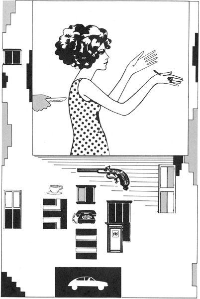

| おのぞみの結末 | |
| 星新一 | |
この作品の全部あるいは一部を無断で複製・転載・配信・送信すること、内容を無断で改変・改竄することを禁止します。また、有償・無償にかかわらず第三者に譲渡することはできません。
おのぞみの結末
星 新一
挿絵 真鍋 博
おのぞみの結末
休日の午後。青年が自宅、すなわちマンションの一室でぼんやりとしていると、玄関でベルの音がした。
ドアをあけてみると、女が立っている。ちょっときれいな顔つきの、若い女だった。そのうしろには、もうひとり女がいた。そっちは、さほど美人ではなかった。どちらにも、見おぼえがない。
「なんでしょうか......」
青年が聞くと、女は答えた。
「あの、少しばかりお話が。入ってもいいでしょうか。決して、ご迷惑になるような件じゃないのですけど......」
「どうぞ」
青年は、ちょうどひまを持てあましていた。女はなかに入り、すすめられるまま椅子にかけた。もうひとりの女は、どこかぎこちない動作であとからついてきて、そのそばに立った。椅子にかけた女は言った。
「独身でいらっしゃるようね」
「ええ。当分、きままな生活を楽しむつもりなんです。だから、結婚はまだまだ先の話です」
「けっこうですわね。それは、あなたのご自由。でも、ひとり暮しだと、不便なこともおありでしょう。朝の食事とか、部屋の掃除とか、洋服のブラシかけとか......」
「まあ、それぐらいのことは、仕方ありませんよ。しかし、なんで、そんなことを聞くんです。いったい、ご用件は......」
質問すると、女は微笑しながら言った。
「じつはね、ロボットをおすすめにあがったんです。お使いになってみませんか......」
そばに立ったままの無表情の女を、青年はちょっと眺めてうなずいた。
「なるほど、そうでしたか。ロボットとはねえ......」
「お使いになってみれば、どんなに便利なものか、おわかりになりますわ。命じるだけで、仕事が片づくんですから」
「そりゃあ、ないよりいいでしょうね。しかし、ロボットというからには、精巧な装置なんでしょう」
「もちろんですわ。そのうえ、丈夫そのもの。こわれたりなど......」
「そんな意味で聞いたんじゃないよ。つまり、きっと値段のほうも高いんだろうと......」
「買うとなったら、お安くはございませんが、賃貸という方式もあるんですのよ。たとえば一年間だと......」
女は金額を言った。むりをすれば、彼に払えない額ではなかった。
「......一年間お使いになってみて、それからさらに継続するか、お買いになるか、おやめになるか。あらためておきめになることも、できるんですのよ」
「ちょっと考えさせて下さい......」
青年は、考えてみた。うむ、悪くないかもしれない。ちょっといい気分になれるだろう。そう思いながら、椅子にかけている女に目をやる。
なかなか魅力的な女性だ。さっきからの会話で、そのことがわかってきた。
「どうなさいます」
女がうながした。青年の頭に、あることがひらめいた。われながら名案だと思った。
「一年間だけ、借りてみることにしたよ。料金は、いま払うよ。きょうから使いたくなってきたんだ」
「けっこうですわ。ありがとうございます。故障は決していたしません。では、来年のきょう、またご相談ということにして......」
それを聞きながら、青年は支払いをすませた。そして、立っているほうの女に言った。
「さあ。会社へ報告にいってくれ。たしかに一年間、借りたとして......」
「はい。わかりました」
無表情ながら、はっきりした口調で答え、それはドアから出ていった。青年は急いでカギをかけ、女のところへ戻って話しかけた。
「さて......」
「なんですの」
「これで、きょうから一年間、きみはぼくのものだ。金はちゃんと払った。文句はないはずだぜ......」
内心、青年はちょっと得意だった。これで、説明役の女のほうを手に入れた。息をはずませながら、椅子にかけている女に飛びつき、だきしめる。そのとたん、彼は驚きの叫びをあげた。
「......な、なんだ、これは。きみのほうがロボットだったのか」
「ええ、あたしはロボットですわ。よくできているでしょう。さあ、まず、なにをいたしましょうか」
しばらくぼんやりしたあと、青年はあらためてくやしがった。
「まんまと、一杯くわされたな。まさか、こっちがロボットだったとはな。料金は払ったし、もう取りかえしがつかない。しかし、後悔しても、はじまらない。とにかく、ロボットを一年間は使えるのだ。大いに活用しよう」
「そうですわ」
「ちょっと出かけてくる。そのあいだに、部屋の掃除をしておいてくれ」
「はい」
散歩から帰ると、すべてきれいになっていた。彼はいくらか満足した。
「夕食を作ってくれ。きょうは、中華風のものが食べたい」
「はい」
この調子だと、まあ、そう損にはならないようだ。こうして、青年とロボットとの生活がはじまった。彼は、会社の仕事を持ち帰ったことがあった。手伝わせてみるか。
「この計算をやってくれ」
「はい」
順調なすべりだしのようだった。一杯くったどころか、これはもうけものかもしれない。しかし、日がたつにつれ、しだいに、どこかおかしくなってきた。
「さあ、きょうも計算をたのむよ」
「あまり気が進みません」
「文句をいうな。やれと命じているんだ。早くとりかかれ」
大声でどなりつけると、ロボットはいやいやながら、やりはじめた。けっこう時間がかかり、そのせいか、つぎの朝の食事のコーヒーの味が、ちょっと薄かった。
「おまえは、調子がおかしいんじゃないのか」
「いいえ、これでいいんです。すべて正しく作動しております。故障でしたら電波が発信され、本社から人が来ます。その場合以外、だれもやってきません」
しかし、どこかおかしかった。料理の盛りつけが乱れる。食器の並べ方が変る。最初のうちはきちんとしていたのに、そうでなくなった。
「やはり、どこか故障してるようだ」
「そんなことは、ありません。正常そのものです」
「変な話だなあ......」
青年は会社に出かける。昼休み、すでに妻子のある先輩の社員に、そのことを話題にしてみた。
「じつは、このあいだからロボットを使っているんです。うまいやりかたで、押しつけられてしまいましてねえ」
「きみもか。こっちもだよ。やつらは巧妙だ。強引なセールスマンに、ねばられたことがあった。そのすぐあとにやってきて、ロボットをお使いになりませんかと持ちかけられた。うるさい来訪者の相手も引き受けますとね。あとで考えると、たぶん、みんなぐるだったんだろう」
「こっちは、女が二人で来ましてね。人間の女とばかり思ったほうが、あにはからんやロボットでしてね......」
「どうせ、どっちもロボットさ。うまくできているよ」
「ロボットなら、それでもいいんですが、期待どおりに働いてくれなくなったんです。大声で命令してやっと動くとか、くたびれるはずはないのに、ほかのことに影響が及ぶとか。先輩のところのは、なんともありませんか」
「や、きみのとこもか。うちも、そうなんだ。ワイフが、使いにくくて困るとこぼしているよ。結果としては、まあ命令どおりになるんだが、それまでが大変さ。ていねいな口調でたのんで、やっと働きだしたこともあったよ」
「じゃあ、ぼくもそうしてみるかな」
「いや、それでいつもうまくゆくとは限らないんだ。こうなったからには、一年間、おどしたりすかしたりで、なんとか使いこなす以外にない。契約更新の時に、文句を言うつもりだよ」
「先輩のとこのもそうとなると、ぼくのだけが例外というわけじゃないんですね。いったい、どういうことなんだろう。わけがわからない」
ロボットの使いにくいことは、依然として変りなかった。
「酒が飲みたくなってきた。そこの酒屋まで行って買ってきてくれ」
「気が進みません」
「そんなこと言わずに、たのむよ。きみを使いこなすのに、あれこれ頭を使うんだ。けっこう苦労する。酒を飲みたくもなるよ。な、わかるだろう。この気持ち。買ってきてくれないかな」
「では、買ってまいりましょう」
やっと酒にありつける。それを飲みながら、こう疑ってみたくもなるのだった。このロボット、持ち主の欲求不満を高まらせ、酒を飲まずにいられなくさせるよう、その方面の企業が関連しているのではないかと。
月日がたっても、いっこうに、こつは飲みこめなかった。なかなか動かず、ついに腹を立ててひっぱたき、やっと仕事をはじめてくれたということもあった。まったく、ロボットの名にふさわしくない。この内部、どういうしかけになっているんだろう。
十カ月ほどたった。青年が会社に行くと、先輩の社員が話しかけてきた。
「うちでは、ロボットの契約を更新したよ」
「ぼくのところは、あと二カ月です。で、なにかわかりましたか。やはり、どこか故障していたんでしょう」
「そうじゃないんだね。説明を聞いたよ。もともと、ああいうぐあいに作られているんだそうだ。それが人間のためだと......」
「どこがどう、人間のためなんです」
「あまり忠実そのものだと、使う人間の思考が単純になってしまう。ロボットがぐずぐずしてみせるのは、その命令がやるにあたいするものかどうか、声から判断するためだ。考えてみると、わたしもどなることで、これは重大なことだと、自分に確認させていたことに気づいたよ。おかげでワイフもわたしも、この一年間、頭がぼけないですんだ。かえって利口になったかもしれない」
「同感なさって、もう一年間お使いになる気に......」
「ああ、回想してみたら、ワイフの病気の時は、すぐ命令に従い、子供のせわなど、よくやってくれたよ」
「それで満足なら、けっこうです。しかし、ぼくはまだ独身。あんなのは不要ですよ」
そして、ちょうど一年目。ロボット・サービス会社の者と称するのが、やってきた。
「どうなさいます」
「事情は、知人から聞いたよ。そういうものかもしれないが、契約を更新する気はない。連れて帰ってくれ」
「さようですか。お若いんですから、むりないかもしれませんね。折をみて、またおすすめにまいります」
「そうしてくれ」
「この一年間のご体験。あとになって悪くなかったと、お思いになるでしょうね」
「どうかな」
ロボットはいなくなった。青年は考える。やれやれ妙な一年だったな。ああいうものとは知らなかった。こんなことなら、人間の女のほうがまだいいというものだ。彼の人生観はいくらか変化した。
やがて青年は恋愛をし、結婚した。甘い日々が過ぎてゆく。妻はすなおで、よく家事をやってくれた。青年は、会社の仕事を家に持ち帰ることもあった。たのむと、妻はそれを手伝ってくれた。
しかし、たび重なると、ぐずぐず言うようになってきた。家事すべて、時にはおせじを言ったり、あるいはどなったりしなければならない。だが、破局にいたることはなく、二人の仲はまあまあだった。なぜなら、彼はロボットでそのようなことを、経験ずみなのだから。
研究室のなかでエフ博士がひとり実験をしていると、来客があった。きちんとした服装の紳士。声をひそめて話しかけてきた。
「じつは、ちょっとお話が......」
「どんなことですか。わたしは忙しいんです。早いところ、おっしゃって下さい」
博士は、ビーカー内の溶液を試験装置のなかに流しこみながら言った。
「われわれのグループに加入していただきたいと思って、うかがったわけで......」
「いろいろな研究団体に入っている。これ以上よけいなことは、やりたくない。研究のための時間が、へることになる」
「お仕事のさまたげになるものでは、ございません。むしろ、研究をさらに意義あらしめるためのグループです」
「いったい、どんなグループなのだ」
「ご説明いたしますが、これについては決して他言なさらぬよう、お願いします」
「わたしは、おしゃべりでもなければ、いいかげんな人間でもない」
「よく存じております。では、打ちあけましょう。世界征服をめざすグループです」
「なんだと......」
博士は実験の手を休め、はじめて相手の顔を見た。まじめな表情が、そこにあった。
「世界を支配しようというのです」
「どういうことだ、これは。子供むけ漫画の読みすぎか、テレビ映画の見すぎか、どっちにしろ、ばかげている。それとも、なにかの冗談か」
「わたしが、先生の時間つぶしのために、わざわざ来たように見えますか」
「そういえば、あなたは常識のありそうな顔をしている。若くもない。となると、急に頭がおかしくなった......」
「ちがいます。申しおくれましたが、わたしは心理学を専攻している学者です」
と相手の男は、名刺を出した。その名前はエフ博士も知っていた。
「そうでしたか。狂っているのでもなさそうだな。それにしても、あなたのような立場の人が、なんでそんな、ぶっそうなことを言うのです。冗談ではないようだが、お断わりだ。そんな悪質な陰謀団に手を貸すなんて......」
「秘密のうちにことを進めているのですから、陰謀とはいえましょう。しかし、悪質ときめつけるのは、早まっております。それこそ漫画の読みすぎ、テレビの見すぎ......」
「なんだか話が、おかしくなってきたな。では、その、悪質でないという理由を、聞こうじゃないか」
忠告は事情を聞いた上でと、博士は考えた。相手は言う。
「そうそう、冷静になって話し合うのがいいのです。世界の現状について、これでいいのかどうか、ご意見をひとつ......」
「どうも、ばくぜんとしているな」
「完全な平和とは言いきれない。どこも自国の利益ばかりを考え、なんらかの形で争いあっている。武力に訴えかねない前兆もある。これでいいと、お考えですか」
「そうは思わないよ。困ったことだ」
「でしょう。口先ではうまいことを言うが、現実問題、国家間の格差はちぢまらない。自由と秩序の調和がほどよくとれている国など、めったにない。教育の不平等は、どこにもみられる。不正なことで利益をえながら、のうのうとしているやつも多い。公害、資源、エネルギー、それらについても各国の足並みがそろっているとは、決していえない」
「いちいち、ごもっともだ」
「もっと並べましょうか」
「もういいよ。そういうことなら、わたしだって、いくつも指摘できる」
「わかっておいでで、よく平気でいられますね」
「しかし、腹を立ててみても、どうにもならないじゃないか」
「あきらめの境地ですな。むりもありません。しかし、事態は変った。われわれのグループの存在です。そのメンバーが協力しあえば、改善は可能となるのです。これでも、まだ悪質とお思いですか」
「私利私欲の団体では、ないようだな」
「そうなんです。だれでもメンバーになれるというのでは、ありません。まじめな人物、それが第一条件なのです。だから、人選は慎重。先生に関しても、まずねらいをつけてから、時間をかけて、くわしく調べさせていただきました。そして、立派なご性格と知った。その上での参上です。秘密を打ちあけても大丈夫と、信頼したからこそで......」
「いい方針だ......」
いつのまにか博士は、相手の話に引きこまれてしまった。
「ご理解いただけて、ありがたい。グループのなかには、戦争や革命の戦略、ゲリラ活動などをくわしく研究した専門家がいます。それらの成功に必要なことは、まじめな者で構成されていなければならぬとの結論に達したのです」
それを聞き、博士は青くなった。
「どうも気が進まないな。ゲリラ活動とはね。いかに目的がよくても、殺人はきらいだ。流血の上に、なにかを築こうとするやつの気が知れん」
「早がってんは困ります。そんな幼稚なことは、いたしません。殺人や暴力で計画を進めるなど、まだ申しあげていませんよ」
「じゃあ、どうやってやるというのだ」
「人を動かすには、金銭、イデオロギーなど、いろいろな方法がある。しかし、それらには限界がある。もっといい方法が、存在するのです。頭脳です。それが協力しあえば、世界から国境なるものをなくすことができる。ここへ加入をお願いにまいったのも、先生が第一級の頭脳の持ち主だからこそで......」
そうほめられると、博士はまた、まんざらでもない気分になった。
「しかし、買いかぶられているのじゃないかな。わたしはただ、薬品の研究をやっているにすぎない」
「そこがいいのです。その研究を、進めて下さればいいのです」
「もう少し、具体的な説明を......」
「じつは、精神安定剤の新しいのを、開発していただきたいのです。作用は、現在のものと同様でいい。しかし、それの含有されていることを、簡単に検出されないものが必要なのです。その開発に必要な資材、資料、あるいは協力者。おっしゃって下されば、グループのほうでそろえます」
「そんな精神安定剤を使って、どうしようというのだ」
「かっとなりやすい国民性の国も、あるわけです。目的達成のための障害となる。ですから、その国むけの食料に、それをちょっとまぜようというのです」
「うまくゆくかな」
「ご心配なく。われわれのグループには、倉庫業者、海運業者もいるのです。それらが秘密のうちにやってくれる。その国の、検査を担当する役所にもメンバーはいるのですが、万一ということもある。だから、検出しにくい精神安定剤が欲しいのです」
「もう、そんな段階まで、態勢がととのっているのか。ずいぶん進行しているのだな」
博士はいささか驚いた。最初は架空の話かと思っていたが、こうなると信用したくもなる。グループに加入したほうがいいかもしれないと、思いはじめた。相手は言う。
「おわかりいただけたようですね」
「しかし、世界の征服とは、容易なことではないぞ。たかが、精神安定剤をばらまく程度のことでは......」
「もちろん、わかっております。それは計画のほんの一環。さまざまな作戦が、展開されているのです。秘密のメンバーは各国、各地、各部門の重要な地位にいる。国籍、人種などを問わず、協力しあっている。だからこそ、目的達成が夢ではないのです」
「たとえば、ほかにどんなことが......」
「ある国においては、そこの元首のかかりつけの医師が、われわれのグループの一員です。当人を病気にさせて殺してしまうこともできますが、それでは無意味。生かしておいて利用したほうがいい」
「どんなふうにだ」
「診察の時に自白剤を飲ませ、重要な情報を聞き出しているのです。また、当人の弱味もにぎっている。いざという時、非常に役に立つわけです。国政を左右できるのですからね」
「どこでも、そうゆくとは限らんだろう」
「マスコミ機関のなかにも、メンバーをひそませてある。だから、スキャンダルを流して指導者を失脚させることもできるのです。そして、こちらの手の及んでいる者に、政権を交代させればいい。そこの国民、反対派の陰謀とは思うだろうが、まさか、全世界的なこんなグループによるものとは、夢にも......」
「えらいことだな」
「すぐれた催眠術師もおりますよ。ある国では、警察の大物がわれわれグループの一員だ。また、ある国では原子力潜水艦の艦長がそうです」
「よくも、それだけの組織を作りあげたものだな」
「だれもが内心にいだいている、世界の現状への不満。それに呼びかけたから、うまくいってるのです。悪事が目的だったら、こうはいきません。秘密が保たれているのは、正しいからこそです。いかがです、先生。ここまでお聞きになった。こんな陰謀が進行中だと、よそへいってしゃべり、計画をめちゃめちゃにしてしまう気になれますか」
「ならないね」
「では、ご加入いただけますね」
そう言われ、博士はうなずいた。
「協力するよ。聞けば聞くほど、みごとな作戦だ。しかも、人類のための......」
「そこなのです。愛国心だけでは、人はこうまで団結できません。人類のための行動だから、なんのやましさも感じない」
「たしかにそうだ。わたしもさっそく、その薬品の研究にとりかかるとしよう」
「お願いします。時どき、進展のぐあいをご報告にまいります。電話ですませるかもしれませんが、情報はお伝えいたします。人はだれも、事態がわからないと不安になるものです。また、自分のやっていることについて、疑問を持ちはじめる。それではいけないのです」
「それはそうだ」
「では、なにぶんよろしく」
客は帰っていった。エフ博士は、なんとなく明るい気分になった。これまでは、研究のための研究だった。しかし、これからは、世界を救うための研究になるのだ。
よりよくするために、世界を征服する組織の一員。興奮を感じる。具体的な目標が示されたのだ。使命感も、わいてくる。それに、スリルだってある。楽しい日々。仕事のしがいもあり、能率もあがる。
博士はまじめな性格だが、お人よしではない。あの話、もしかしたら巧妙な詐欺かもしれないと考えることもある。おだてて新薬を作らせる計略ということだって、ありうる。
そんな時、男が連絡にやってくるのだ。
「ご心配ごとが、おありのようで」
「まあね」
「ご遠慮なくおっしゃって下さい。ここが不便だとか、こんなものが欲しいとか......」
「そうだな、ある製薬会社で、これに関連した研究をやっているはずなのだ。その状況を知りたいのだが、企業の秘密。もどかしくてならない」
「なんとかいたしましょう」
「そんなことが、できるのか。ははあ、その会社内にもメンバーがいるというわけか」
「いいえ、そこにはおりません。しかし、われわれのメンバーのなかに、電子工学の優秀な学者がいるのです。それがすばらしい装置を開発してくれました」
「どんな品をだ」
「コンピューターが作動する時、電磁場の微弱な変化が発生する。それを、はなれたところからキャッチするという性能のものです。それを分析することにより、いかなる問題が扱われているかを、知ることができるのです」
「それは、えらいことだ。となると、コンピューターによる情報の大部分は、われわれに筒抜けというわけじゃないか」
「そういうことです」
「よく社会問題にならないな」
「悪事に利用しないからですよ。正義ゆえに、秘密が保たれている。その学者も、しっかりした、まじめな人です。期待して、お待ち下さい」
やがて、その情報がとどけられる。博士が知りたがっていたデータそのものだった。普通の者に作れる水準ではない。
天才的な電子工学者が一員であることは、たしかだ。となると、世界征服組織の存在も、信用せざるをえない。
他のメンバーも、よくやっているようだ。負けてはいられない。博士は一段と研究に熱中する。時おり、男が連絡にやってくる。
「研究資金に、不足はございませんか」
「それは、あるに越したことはないよ。それだけ完成が早くなる」
「ぜひ、早めていただきたいのです。いかほどご入用で......」
「しかし、気になるな。大金持ちの後援者がついたとはな。われわれの世界征服は、人類のためを思えばこそだ。そんな後援者がつくと、あとがやっかいだぞ。そいつに頭があがらなくなる」
「決して、そんなひもつきの金では......」
「すると、なにかな。どこかの大銀行のコンピューターを巧妙に狂わせ、うまいぐあいに金を出させたという方法か。優秀な人材がいれば、可能かもしれない。しかし、そういう悪事で作った金だと、不愉快だ」
「ちがいますよ。ご説明いたしましょう。メンバーのひとりに、地質学者がいる。地層の分析器を作りたいとおっしゃるので、必要な知識を、ほかの分野の専門家たちから集めて提供した。すると、大変なものを作りあげてくれました」
「なんだね」
「ダイヤモンド鉱脈の、探知機ですよ。それを持ってほうぼう歩き、ついにすごい鉱脈を掘り当てたのです。いま、やはりメンバーのひとりが、その採掘会社をやっているのです。といった金ですから、安心してお使い下さい」
「その地質学者も、業績を世に発表したいだろうに。また、採掘会社の経営者も、なんと欲のないこと」
「いうまでもないことでしょう。名声や金銭も、悪くはありません。しかし、世界征服をめざすほうが、もっと楽しい。なにものにもかえがたい興奮がある。これはゲームですよ。知的で雄大なゲーム。いまだかつて、だれもなしえなかったことをやりとげる。これにまさるものは、ありません」
「そういえば、そうだな。わたしも張り切らなければならない。では、少しその研究資金をまわしてもらうとするか」
博士は、さらに仕事にはげんだ。ほかの連中に負けてはいられない。眠る時間も惜しむ。世界征服の日のことを考えると、進み方もはかどる。
そして、やっと完成。訪れてきた男に言う。
「ついに完成したよ。これが、そのサンプルだ。これが構造式、これが製法だ」
「お手数をかけました。おかげで理想実現の日が早まります。謝礼は、そのあとということで......」
「お礼が欲しくて、やったのじゃないよ」
「そうおっしゃるかたがたばかりのグループだから、いいのです。では、いただいてゆきます。経過についてのご報告は、これからも定期的にいたします」
「たのむよ。そこが関心の的なのだ」
約束どおり、男は時どき連絡にやってくる。薬品は大量生産に移され、重要地区にばらまかれているということなど。
そして、ある日。こんな報告をした。
「もう、まもなくです。メンバーのひとりの物理学者が、とうとう待望のものを完成させました。これで仕上げとなります」
「なんだね、それは......」
「貯蔵してある核兵器を、遠くから爆発させる、一種の素粒子発生装置です。弱い形でですがね。こうなると、核兵器を持っている国にとっては、一大事。よそへ押しつけようにも、引き受ける国のあるわけがない」
「そんなものが、できたとは......」
「近く、ある国が核実験をしようとしている。いい機会です。全世界にニュースで予告し、実験予定日の前日に爆発させるわけです。あとは、すべて順調に進展するでしょう」
それは、その通りになった。世界は、それが事実と知らされた。しかし、大混乱にはならなかった。各国の要所要所にグループのメンバーがおり、あらかじめ手が打たれてあったからだ。
緊急国連総会が開かれた。予定どおりの発言がなされ、このグループの存在があきらかになり、それに実権がゆだねられた。さからいようがない。
会合が開かれる。エフ博士もその一員だった。はじめて、おたがい紹介される。
「や、あなたもメンバーでしたか」
なごやかなムード。みな満足感にひたる。史上はじめての、世界征服が実現したのだ。アレキサンダー大王、ジンギスカン、ナポレオン、ヒットラー、だれにもなしえなかったことが。
議長が言う。
「いまや世界は、われわれの思いのままに改革、運営できるようになった。その相談をするわけだが、その前に、少し楽しもうではないか。これまで、ずいぶんがまんし、苦労をしてきた。その代償を味わってもいいと思う」
酒だの、美食だの、美女だの、望めばすぐに入手できた。しかし、まじめな学者が多い。こころみてみた者もあったが、やがて飽きてしまう。
なんとなく、むなしくなってくる。目標にむかい、成功を信じて努力していたかつての日々がなつかしい。それに、世界に緊張がなくなり、刺激がなく、退屈そのもの。
会議が開かれる。
「さて......」
だれも、なんにも言わない。気の抜けた表情ばかり。だれかが言う。
「はりあいが、なくなってしまった」
「以前のほうが面白かったな。人びとはわれわれにまかせきり、物を考えようとしなくなった。こんな世界でいいのだろうか。緊張は文明にとって、必要品なのかもしれない。ごたごたを発生させつづけるほうが、人間らしいような気がする」
「もとへ戻せないものかな」
いくらか会議も活気をおびてきた。目標がきまったからだ。
「これだけのことができたのだから、もとへ戻せないわけがない。われわれの才能をもってすれば......」
からだが少し熱っぽかった。体温をはかってみようかと思ったが、それはやめた。何度あるか知ったところで、どうしようもないのだ。また、そんなことをやっている時間も惜しい。おれには、早くやりとげなければならない、重要な仕事があるのだ。
あの男を、一日も早く見つけ出さねばならない。そいつに関する資料は、ポケットのなかにある。年齢、三十歳。身長、一七五。そのほか特徴のすべてが記入してある。
ひまがあると、それを出して眺める。もう、なにもかもが頭の中に入ってしまい、あらためて見なおすこともないのだが、つい取り出してしまうのだ。
「どこにかくれているんだろう」
と、つぶやく。資料には、そいつの写真もついている。正面からの顔写真ばかりでなく、横顔、うしろ姿、全身像など、あらゆる角度からのがそろっている。そして、特殊眼鏡をかけて見ると、それは立体的に浮かびあがってくるのだ。
名前と住所も書いてあるが、これはほとんど意味を持たない。どうせ名前は変えているだろうし、その住所に寄りつくようなへまをするわけがない。
「どこにいやがるんだ......」
またも、つぶやいていた。万年筆型の小さな拳銃をいじり、いつでも発射できる状態にあることをたしかめた。
あの男を追いはじめてから、もう十カ月になるだろうか。ずっと旅の連続だった。海ぞいにいくつもの港町をたどったこともあったし、山奥へはいりこみ、林のなかの小屋をのぞきこんだこともあった。船を出してもらい、沖の小島を訪れたこともある。
すべて、結果はむなしかった。だからこそ、まだこうして歩きまわっているのだ。いまは、大都会のなかをさまよっている。時どき、突発的に都会へ戻りたくなるのだ。身をかくすには、山奥より人ごみのなかのほうがいい。そういう常識が頭に浮かぶからだ。
発見するには、逃げる当人の身になって考えなければならない。だから、あらゆる方法を検討してみた。逆に、おれを尾行しつづけるという方法だってあるのだ。見えかくれにあとを追っていれば、つかまる率はいちじるしく低くなる。おれが時たま立ちどまり、うしろのけはいをうかがうのは、そのためなのだ。
いまは夕方の、通勤ラッシュの時刻。大きな駅の通路の片すみにかくれ、流れる人波に目をやっている。数えきれぬ人びと。しかし、そのなかにやつがいたら、おれはすぐに見つけ出してしまうだろう。やつの姿は、写真を眺めつづけることによって、頭のなかに焼きついてしまっているのだ。
しかし、きょうも収穫はなかった。もう少し、ここにいるべきだろうか。場所を変えるべきだろうか。その判断には、いつも迷ってしまう。無限の持ち時間があるのではないのだ。有効に使わなければならない。
駅をはなれることにした。これから、近くの盛り場をまわってみることにしよう。その方角に歩きかけると、道ばたで営業をしている易者が目に入った。占い師がたよりにならないことは、知っている。あの男をまだ発見できずにいるのが、なによりの証明だ。しかし、きょうのように長時間の緊張のあととなると、わらにでもすがりつきたい気分になる。また、希望のある言葉に接したいのだ。
易者は手相を見て言った。
「悩みを、お持ちですね」
「ああ......」
「あなたは、女性にもてるかただ」
「ああ......」
二十五歳。まだ独身だ。外見も悪くないと思っている。頭の働きだってそうだ。この十カ月の旅の途中、ゆきずりの恋も何回かあった。しかし、それは発展しない。そんな精神状態にないし、ひまもないのだ。
「あせっておいでのようだが、現在のところ、運勢は順調といえませんな」
うそでもいいから、景気のいい言葉を聞きたかった。がっかりして聞く。
「運の開けるのは、いつごろだろう」
「もうしばらくの、しんぼうです。近いうちに、必ずよくなりますよ」
「はっきり時期を言ってくれないかな」
「さあ、三カ月後といったところでしょうか」
「なんだと。それでは、だめなんだ......」
思わず、ため息をついた。すでに十カ月がたってしまった。あと二カ月しか残されていないのだ。三カ月後の幸運なんて、なんの意味もない。ポケットから、あの男の写真を出して言う。
「......あと二カ月以内に、こいつをさがし出さなければならないんだ」
それで、相手ははじめて事態を了解した。
「あ、それをおやりになっているのでしたか。早くおっしゃって下さればいいのに。では、この男の人相を拝見......」
巧妙に、もっともらしい説明をはじめた。
「......この男の運勢は、だいぶ悪い。一カ月後あたりに、最悪になります。つまり、あなたの手にかかってしまうわけで......」
おざなりの言葉が並べられた。そうなると、またそらぞらしい。
「どっちの方角にひそんでいる」
「西のほうでしょう」
「距離は......」
「そう遠くないようです」
ぼかされてしまった。むりもない。みごとに的中する効果など、ないのだ。
「じゃあ、そっちを当ってみるとするか」
「ご成功を祈りますよ」
その声をあとに、おれは別れた。盛り場をひとまわりし、一軒のバーに入る。ドアをくぐった瞬間、お客たちの顔をさっと見わたす。身についた習性なのだ。ここもだめか。お客のなかに、あの男はいなかった。
「どうぞ、こちらへ。お飲み物は......」
女の子が声をかけてくる。
「ウイスキーをくれ......」
きょう一日も、むだに終りそうだ。酒が運ばれ、女の子が話しかけてくる。
「なんだか熱っぽそうね。帰ってお休みになったほうが、いいんじゃあないの」
「そうしては、いられないんだ」
「ここのお店にはじめていらっしゃったようだけど、お仕事はなんなの......」
くだらぬ会話を楽しんでいる余裕はない。おれは写真を出して言う。
「こいつを追っている。もう、あと二カ月しかない」
「まあ......」
すぐに女は了解し、目を見開いた。好意と尊敬にあふれた表情に変る。
「......大変でしょうね」
「見かけたことは、ないか」
「お店の常連のなかには、いないわ。もし来たらお知らせするわ。連絡先を教えて」
名刺を渡す。一定の住所などない。電話サービス社の番号が印刷してある。おれへの電話を録音し、いつでも再生して聞かせてくれるところだ。
こんな立場の者に対し、女性は一般に好意的だ。しかし、男性となると、そうでない者のほうが多い。おれは平凡な人間とちがうことを立証しようとして、進んでこの道を選んだのだ。その勇気のない男たちが、好感を持って接してくれるわけがない。
すぐそばで、男がひとりで飲んでいる。かりに、話しかけて、この写真の男を知らないかと質問してみたとする。たいていの場合、だまって首を振るだけで終りだ。時には、いやに意気投合した形になり、どこそこで見かけたと教えてくれることもある。
しかし、ほとんどそれは、でたらめなのだ。何回も苦い目に会わされている。むだ足をさせ、やつらは心のなかで面白がるのだ。そして、たまに真実のことがあるから、やっかいだ。もっとも、最近、その見わけ方がわかってきた。なにごとも体験なのだ。
バーを出て、ホテルの部屋に戻る。電話サービス社にかけてみたが、きょうはなんの情報も入っていなかった。一日がむだに消えてゆく。
最初のうちは、日時などたっぷりあるように思えたものだ。しかし、あと二カ月ともなり、手がかりは依然としてなく、からだが熱っぽくなると、あせってくる。一日一日が、貴重きわまるものなのだ。
つぎの日、おれはこの大都市のなかの各警察署をまわり、留置場をのぞかせてもらった。その次の日は、各企業の研究所をのぞかせてもらった。その次の日には、各国の大使館をまわり、勤務者の写真を見せてもらった。
立場を示す証明書を見せると、ほとんどのところへ出入りできるのだ。極秘の場所も少しはあるが、そこでは責任者が、写真の人物はいないと言明してくれる。違反したら重罪なので、その回答は正しいものと受けとっていい。
病院をまわり、刑務所をまわり、人間がかくれるのにふさわしそうなところを、しらみつぶしに調べていった。もちろん、その途中だって、周囲の観察はおこたらない。しかし、なんの収穫もなかった。あの男に関する消息はつかめなかった。
しばらくぶりで、電話サービス社に情報が入っていた。地方都市の女性からだ。かつて、その地へ行った時に知りあった女だ。
「問題の男の人らしいのを、見かけたわ。きのう、街ですれちがったの......」
どう判断したものだろう。迷うね。
一般に女性は好意的だ。しかし、追うおれに対してそうであると同様に、逃げる男に対して好意を持つことだってあるのだ。出かけていって直接に話を聞けば、どっちであるかの見当もつく。しかし、逃げる側の味方だったら、日時の浪費ということになる。
考えたあげく、そこへ出かけてみることにした。ほかに、あてはないのだ。
列車へ乗る時、一番うしろの車両から入る。そして、なかを歩いて先頭の車両に移るのを習慣としている。駅につくたびに、ホームを見まわす。そこに、あの男がいるかもしれないからだ。下車の時は、もう一回お客を点検しながら後尾の車両まで行ってから。
目的の地につき、その女性に会った。好意的な報告とはわかったが、確実性の点で欠けていた。いちおう、その近郊を調べてみることにした。あの山のむこうにいるんじゃないかと思うと、行ってみずにはいられなくなる。昔おこなわれた、かたき討ち。その追う側の心境が、よくわかる。
もっとも、おれの場合、かたき討ちとは少しちがう。あの男に、とくに憎しみをいだいているのではないのだ。ただ、追いつめなければならないから、それをやっている。さもないと......。
からだの熱っぽさは、さらに少し高まった。だめだとはわかっているが、その地方都市の病院へ寄ってみた。
「熱があるんですが......」
「かぜでしょうかな」
「ちがうのです。じつは......」
立場をあかす。目標の男を追って、十カ月になることも。
「そうでしたか。お気の毒ですが、どうしようもありません。これから、熱があがる一方ですよ。手当てを禁止されているわけではありませんが、治療薬品が配給されていないのです。手におえません。もっとも、なおせるようでは、意味がありませんものね」
「それはそうです」
「さきほど、十二カ月目の患者がひとり、運びこまれたところです。ごらんになりますか......」
医者は病室をのぞかせてくれた。ベッドの上に患者が横たわっており、高熱に苦しんでいた。うわごとを口走り、ふるえている。医者は説明した。
「......正確には十二カ月と五日目です。あと、せいぜい一日の命でしょう。まったく、妙な病気を作り出したものだ」
「ひどい。冷酷なものですね」
「しかし、それを承知で、本人は志願したわけですよ。あなただって、同じでしょう。いまさら後悔しても、手おくれですよ」
「わかっています」
「だったら、こんなところで時間をつぶしていないで、努力することです」
「そうですね」
おれは病院を出た。この病気に関してだけは、医者もさじを投げている。同情すら、してくれない。本人が望んだ道だからだ。
十カ月前、考えに考えぬいた末、それをやることを決心した。平凡に甘んじる気なら、なんとか人生をすごせる社会組織。おれは、それから脱出したかったのだ。また、冒険を現実に体験してみたかった。
そして、この大がかりな鬼ごっこが開始された。標的の人物を示され、おれはそいつを追いはじめた。こちらの持ち時間は、十二カ月。それは容赦のないものだった。
まず、ある病原菌の注射を受けた。他人に伝染することは決してないのだが、当人のからだをむしばみ、十二カ月後には確実に死をもたらす。その実例を、いま見せられた。
志願して鬼ごっこに参加している者は、ほかに何人もいる。そして、目標をとらえそこね、持ち時間を使いはたした者は、いまの患者のような運命をたどるのだ。
逃げる側は、いかなる方法を用いても自由。ただ、海外への渡航と、整形手術を受けることだけが禁止されている。それが許されたら、ゲームが成立しなくなる。
地方を回ったあと、また大都会に戻った。都会にいると、あの男が地方にいるように思え、地方にいると、都会にひそんでいるような気がしてくる。
十一カ月を越した。からだの熱っぽさは、一段と高まった。鬼ごっこ開始の時は、一種のロマンチックな感情もあったが、こう期限が迫ってくると、もう気が気でない。ルールの残酷さを、あらためて味わわされる。成功のみこみは減る一方なのに、あきらめたり覚悟をきめたりもできないのだ。可能性は、終りの一日まで残っている。
病気のせいではないだろうが、いらいらする。助けてくれと大声で叫びたいが、そんなことをしても、なんの役にも立たない。朝は早く起き、夜おそくまで街をうろつき、あの男の姿をさがし求めるが、依然としてかげさえつかめなかった。
この鬼ごっこに参加しない普通の連中は、のんびりと毎日をすごしている。それを思うと、腹が立ってきた。やつらが憎くなってきた。この苦しみは、やってみたもの以外にはわからないのだ。
いささか、やけぎみだった。あの男をしとめることができないまま、野たれ死にをするくらいなら、この社会にひとあわ吹かせてやりたい。そうでもしないと、気持ちがおさまらない。
あと、期限まで十日間。おれは絶望的になっていた。もう、とてもむりだ。熱はかなり高くなっている。こうなったら、残された日を、快楽にひたってすごそう。
それには、まず金が必要だった。最初に用意した金は、これまで月割りにして、予算どおりに使ってきた。だから、もうほとんどない。
こうなったら、手段は選ばずだ。夕方に閉店まぎわの宝石店に入り、すきを見てレジスターに飛びつき、金を引っつかみ、そとへ出た。組みついてくる店員をふりきり、道をかける。うしろで非常ベルが鳴っている。
全力で走りつづける。声がかかる。
「とまれ。警察だ。逃げるとうつぞ」
警官が加わったらしい。うたれたら最後だ。足をとめる。しかし、つかまりたくはない。おとなしく逮捕される態度をよそおい、ふりかえりざま、万年筆型の拳銃のボタンを押す。これはゲームに参加した鬼にだけ、所持が許されているものなのだ。
警官も、油断していた。空気を切る鋭い音とともに、麻酔弾が命中し、よろめいて倒れた。しかし、警官はひとりでなかった。もはや逃げきれない。やじうまたちの批難の視線が集中する。おれは目を伏せ、倒れている警官の顔を見た。
「や、やった。こいつだ......」
夢にも忘れたことのない、あの男の顔がそこにあったのだ。いっぺんに力が抜け、からだが崩れてゆく思いだった。まさか、警官になっていようとは。逃げる側だって、知恵をしぼる。これは完全な盲点だった。
そばの警官に身分を示し、いま奪った金をかえし、標的の男の写真を示し、こいつと同一であることを立証した。目標をとらえるのに付随する行為は、かなり大はばに許されているのだ。
「やりとげたわけですな。彼が標的だったとは、同僚のわたしさえ気がつかなかった。期限まで、あと何日でしたか」
「十日......」
「それは、きわどいところでしたね」
周囲に、ざわめきが起った。やっかみと賞賛とが半々だった。おれは倒れている警官をかついで、近所の病院へ連れこんだ。自分でやってもいいのだが、医者にまかせたほうが、なお確実だ。
「とらえました。お願いします。早く」
「それは、おめでとう」
医者はその警官を横たえ、コップ一杯ほどの血液を採取した。ただの血液ではない。この病気を治療できる抗体を持った、血液なのだ。それが、おれの血管に注入された。
すがすがしさが、からだじゅうにしみわたる。ことをなしとげた満足感。それに、これで死ななくてすむのだ。麻酔からさめた警官は、くやしがっている。
「もう少しだったのにな。完全にかくれおおせたと思っていたが、あんなことでやられるとは。注意がたりなかった」
「いや、運ですよ。こんな形で終るなんて、予想もしていなかった」
なぐさめを言ったが、警官はあきらめきれないようすだった。ぼやきつづける。
「いままでの苦労も、水のあわか......」
むりもない。彼はこれまでの成果を失い、平凡な市民に逆もどりしなければならない。もう一回、ゲームに挑戦する気力が残っているかどうか。ないだろうな。
その夜、おれは祝杯をあげた。こんな楽しい夜はなかった。一週間の休養ののち、役所に出頭する。もう熱はない。
「やりとげましたよ」
「おめでとう。で、つぎの段階は、いつからはじめるか」
「すぐにしましょう。緊張感の残っているうちのほうがいい」
「では、追手の写真と資料とを渡す。きみの体内の抗体に対応する病原菌を、その志願者に注射する。十二カ月間うまく逃げきれるかな」
「やってみせますとも......」
鬼ごっこは終り、今度はかくれんぼなのだ。この十二カ月間で、いろいろな要領が身についた。それを充分に活用し、みごとにかくれきってみせる。気の毒だが、その追手には病死してもらうのだ。
銀行へ寄って、逃走用の資金を借りる。さて、どんな服で、どこへ逃げるかだ。また十二カ月間、逆の苦労をつづけなくてはならない。しかし、そのあとの栄光を考えれば、それぐらいなんだ。
みごとになしとげれば、特権階級に入れるのだ。年金が入り、税金は免除、銀行からの借金も返さなくていい。いい地位につけ、やりたいことがやれるのだ。支配階級は、こういう人間ばかりで構成されている。それが当然ではないか。自己の意志と知恵と行動力、それに幸運とで、死の期間をみごとに切り抜けた者......。
夕ぐれ時を少しすぎ、あたりは暗くなりはじめていた。ここはマンションの二階にある一室。エレベーターを利用しなくても、階段をあがって、すぐそばだ。
なかに住んでいるのは、女ひとり。三十歳ぐらいの、ほっそりとした女性だった。美人といえるかどうかはわからないが、理性的な顔だちをしている。地味な服装だった。食事をすませ、机にむかって雑誌を読んでいた。
玄関のほうで、チャイムの音がした。彼女はドアのそばへ行き、内側から声をかけた。
「どなた......」
「じつは、ちょっと大事なお話が......」
若い男の声だった。女がドアをあけると、そいつは、部屋のなかへ入ってきた。女は、とがめるような口調で言う。
「どなたか存じませんけど......」
「まあ、そんなことは、どうでもいいのです」
「なんですの、ご用は」
「べつに、これといったことは......」
「ご用がないのでしたら、お帰り下さい」
「そちらにはなくても、こっちにはあるんでね」
どこか、すごみがあった。
「じゃあ、あの、強盗......」
女は青ざめ、机のむこう側、部屋のすみに逃げた。しかし、それ以上は、どうしようもない。窓から飛びおりようにも、ここは二階、けがをするだろう。まだ、相手が強盗ときまったのではないのだ。
「強盗といえないこともない。しかし、強盗が目的で、ここに来たのではない」
青年は、わけのわからないことを言った。年齢は二十七歳ぐらいか。強そうだった。だぶだぶの服を着ている点が、異様だった。
「どういうことなの。冗談なの......」
「ふざけているのではない。おれは強盗の罪で逮捕されたのだが、さっき拘置所から脱走してきた」
男は、ポケットからナイフを出した。軽く投げあげ、空中で一回転させてにぎりなおした。使いなれているようすだった。それを見て、女はふるえ声で言った。
「ごらんのように、ここは女ひとりの静かで平穏な部屋。手荒なことは、なさらないで下さい。見のがして、よそへ行って下さい」
「おとなしく、おれの言う通りにしていれば、いずれ出ていってやるよ」
「さからったりなど、しませんわ。けがしたくありませんもの」
「ひとつ、ラジオのニュースでも聞いてみるか。警察の動きが、わかるかもしれん。どこにある」
「いま持ってきますわ」
女は、ベッドのある部屋へ行った。青年は、そこをのぞいて目を丸くした。
「いやに豪勢なラジオだな。ダイヤルだのボタンだのが、むやみとついている」
「外国の放送を聞くのが、趣味なの。でも、国内放送なら、この小型のでいいでしょ」
女は小さなラジオを手にして戻ってきて、スイッチを入れた。しばらく音楽がつづいたあと、アナウンサーが言った。
〈......さきほど、強盗の容疑で逮捕されていた男が、拘置所から脱走しました。警察は、その行方を追っています。その男の身長は......〉
特徴が告げられた。侵入者のそれと、一致していた。青年は、少し笑った。
「どうやら、警察はうろたえているようだぞ。手がかりがつかめないらしい。大衆の協力を求めている」
「よく脱走できたわね。簡単には、逃げられないところなんでしょ」
「おれの頭のよさだね。慎重に観察し、盲点をついて実行した。しかし、そのあとが問題だった。まず、服に困ったぜ。公園にかくれていて、通行人をおどし、服を奪った。しかし、こうだぶだぶではね」

「だけど、なんで、よりによって、あたしの部屋に来たの。迷惑だわ」
「つまり、一時どこかへ、身をひそめなくちゃならないからさ。服をかっぱらわれた男も、もう警察へとどけただろう。公園のへんを、うろついているわけにはいかない。捜査網も張られているだろう。おれは、時間をかせがなくてはならないのだ」
「それなら、となりの人の部屋に入ってくれればよかったのに」
「おまえさんにとっては、そうだろうな。たまたま、この部屋が階段のそばにあった。理由はそれだけ。まあ、運が悪かったと、あきらめてくれ」
まさに不運そのもの。女は哀願した。
「早く出ていってちょうだいよ。あたしをしばりあげていいから、出てってよ。電話線を引きちぎってもいいから」
「そうして、となりに移ってくれっていうのかい。理屈じゃ、それでもいいかな。しかし、おれにとっては、手間のかかることだぜ。電話線を切ったりしたら、修理にだれか来るかもしれない。また、となりには強いやつがいるかもしれない。あれこれ考えたら、ここにいたほうが賢明だ。女ひとりのほうが、扱いやすい」
「でも、あたし、こわくてたまらないわ」
「よほどきらわれたものだな。まあ、当然だろう。だれだって、脱走犯にいすわられちゃ、いい気持ちじゃあるまい」
「ごらんのように、女ひとり。ひっそりと生活しているんです。こんなことに、なれていないんです」
「そりゃあ、そうだろう。だれだって、そうさ」
「だけど、なにをされるのかと思うと......」
「おれのほうも、これからどうしようか考えているところだ。さて、なにか目ぼしいものはないかな」
青年は、あたりを見まわす。女はそれに答えるように言った。
「あ、お金でしたら、そこの小型金庫のなかにありますわ」
「いやに協力的なんだな」
「命のほうが大事でしょ。そのへんを荒されたくもないの。もっとも、現金は少しだけ。有価証券などが入れてあるの」
「そんなものじゃ、しようがない。おれは、逃げるのに役立つものが欲しいんだ。からだにあった服でもあればいいんだが、女ぐらしじゃそうもいかない。女装という手もあるが、かえって目立ち、つかまってしまう。なにかないかな」
「お気に召す品があればいいんですけど。たとえばどんなものか、おっしゃって下さい」
女は青年の気を静めようと、ごきげんをとった。一刻も早く、おとなしく出ていってもらいたいのだ。青年は、少し考えて言った。
「まず、コーヒーでもいただくとするかな。台所はどこだ。案内してもらおうか。おっと、包丁なんかを振りまわされちゃ困る。そこの戸棚を調べさせてもらうぜ」
青年がそこをあけると、透明な容器に入った白い粉がたくさんあった。湯をわかしはじめている女に言う。
「いやに砂糖を買い込んだものだな。それとも、メリケン粉か」
「お砂糖よ。値上りするらしいっていうんで、多めに買ってあるの」
「女性というものは、考えがこまかいな。あ、なにも本格的にコーヒーをいれることはない。そこのインスタントのでいい。味を楽しむんじゃなくて、ねむけざましなんだから、濃くしてくれ。そして、砂糖をたっぷり......」
青年はさっきの容器に手をのばした。女は小さく声をあげた。
「あ......」
「おいおい、妙な声を出すなよ。おれのほうも、神経が張りつめているんだ。気になるな。これが砂糖じゃなくて殺虫剤だったりしたら、目も当てられない。普通の角砂糖はないのか」
「それなら、そこにあります」
青年はコーヒーを飲んだ。そして、台所からもとの部屋に戻る。女もそれについてきた。青年は椅子にかけ、なんということなく言った。
「さて......」
「お願い。いいかげんで出てってよ。あたし気が小さいの。緊張が長くつづくと、心臓のぐあいがおかしくなってしまうわ」
もう、がまんができないといったようすだった。
「じゃあ、電話を借りるぜ」
「どうぞどうぞ。そこにあります」
青年は、電話をかけて言った。
「おれは脱走に成功したのだが、身動きできないでいる。服を持って、車で迎えに来てくれ。あ、変装用のつけひげもな。拳銃などはいらない。警察のやつらは、ポケットのふくらみに目をつけるから、かえって見つかりやすい。場所はだな......」
と、ここの所在を告げて切った。女は聞く。
「いまの仲間が迎えに来れば、出ていってもらえるんですの」
「そうはいかない。すぐ出たりしたら、捜査網にひっかかってしまう。そのへんのようすも調べなくては。やつが来たら、おれは少し休養する。すべてはそのあとだ」
「そんなの、困りますわ」
女は、ため息をついた。
「ま、あきらめてくれ。手荒なことはしないから。ところで、おまえさん、なにして暮しているんだね」
「小さな貿易会社につとめていますの」
「しかし、あのラジオは豪勢なものだな。女らしくないぜ」
「趣味ですもの。それに、外国放送を聞くと、語学の勉強になるんです」
「そういうものかね。それにしても、女が暮しているのなら、もう少し、はなやかでもよさそうなものだがな。明るい壁紙とか、ピンクのカーテンとか、お人形とか......」
「あたし、派手なのがきらいな性格なんです。目立つのが好きじゃない」
「珍しいというべきかな。さて、これといってすることもないし、いささか時間を持てあましぎみだな......」
青年は、あたりを見まわした。女はそわそわし、こう言った。
「テレビでもつけましょうか」
「そんなことをしてたら、そとの物音を聞きそこなう。なんだかしらないが、おまえさん、きょろきょろしてるな」
「こんな目に会って、落ち着いていられるわけ、ないでしょ」
女は祈るような表情で、視線をあちらこちらに走らせていた。ほかにどうしようもない。青年は、いっこうに動きそうになかった。ナイフをいじりながら、女を監視している。
しばらくの時間が流れ、そとに車のとまる音がした。少したって、玄関にチャイムの音が。青年は女に聞く。
「だれだ。来客の約束でも、あったのか」
「ないわ」
チャイムは、鳴りつづけている。
「ほっとくわけにもいかないな。だれだか聞いてみろ。そして、ドアをあけないで追いかえしてしまえ」
「どなた......」
女が聞くと、そとから答えがかえってきた。
「おれだ、やってきたよ......」
女は報告した。
「おれだ、ですってよ」
「だれのことだろう」
「さっき電話で呼んだ、お仲間じゃないの。きっとそうよ。少し前に、車のとまる音が耳に入ったわ」
「そうかな。おかしいなあ。来るはずはないんだが、本当に来るなんて。どうなっているんだろう。といって、まるで可能性がないというわけもないし......」
つじつまのあわないことを、青年はぶつぶつつぶやき、考えこんだ。そんなことにおかまいなく、女はドアをあけた。
一人、つづいて一人。いずれも三十歳ぐらいの男が飛びこんできた。機敏な動作。手には、消音器のついた拳銃を持っている。一瞬のうちに室内を見まわし、青年につきつけ、そして言った。
「そのナイフを捨て、手をあげろ。おとなしくするんだ......」
青年は、従わないわけにいかなかった。男たちはドアにカギをかけ、女に言った。
「助けに来ましたよ」
「やっぱり、あれを聞いて下さったのね」
青年は質問せずにいられなかった。
「なにがなんだか、さっぱりわからない。この人たちはなんです。あれを聞いてとか言っているが、あれとはなんです」
「あなたが侵入してきた時、あたし部屋のすみに逃げたでしょ。あの時、スイッチを入れたの。ほかに方法なかったもの」
「なんのスイッチをだ」
「無線機のよ。だから、あなたの話すこと、みんな外部に伝わってたってわけよ」
「すると、その人たちは警察の人なのか。あまり、それらしくないが」
「そんなこと、どうでもいいじゃないの。これであたしは助かったんだし、あなたは運のつきってことよ」
二人の人物は、ナワを使って青年をしばりあげた。そして、床にころがし、女をまじえて会話をはじめた。
「こんなやつに、侵入されるとはなあ。まさに予想外だった」
「そうなの。あたし、はらはらし通しだったわ。いつ書類を発見されるかと、気になってね。目をつけられやすい金庫のなかじゃなく、さりげなく書棚にさしこんであるんだけど、やはり心配で、ちらちら見ちゃったわ。あたし、まだ修練が不足ね」
「仕方ないよ。突発事態だったからな。無線でようすを聞いていて、こっちも気が気じゃなかったよ。拳銃は、すぐ使える場所においとかなかったのかい」
「ベッドの枕の下に入れてあって、取り出すすきもあったんだけど、消音器をつけてなかったことに気がついたの。発射するはめになったら、ことでしょ。銃声で、さわぎが大きくなる。あたしは助かるけど、拳銃はどうしたってことになり、なんだかんだと調べられ、そのあげくに......」
「それはそうだ。そんなことで、あの薬まで発見されることになったらな」
そんなやりとりを聞いていた青年は、ついに口をはさんだ。
「いったい、あなたがたはなんなのです。わからないことだらけだ。おれを、警察につき出さないのか」
「おまえはだな、警察につかまるより、もっと悪い状態におちいったというわけさ。早いところここから出て行けばよかったのに、いすわったりしたからな。われわれは、おまえをしまつする。つまり、殺すってことだ」
「そりゃあ、ひどい。なぜ殺されなければならないんだ。おれはこの女をおどしはしたが、べつに危害を加えちゃいない。それに、なにも盗んでもいない。コーヒー一杯を、ごちそうにはなったが」
「それもよくなかったのだ。台所でよけいなものを見てしまった。あの白い粉のことだ」
「あれは砂糖だろう」
「ちがうんだな。それに、無線機も見た。われわれにとって困ったことだ」
「豪華なラジオとばかり思ってたが」
「いまはそう思ってても、そのうち、どうも変だと気がつくはずだ。砂糖にしては、きらきらしすぎていた、容器にマークがついてなかった。ラジオにしては、どうも複雑すぎてたようだとね。最もうれうべきことだ」
男は顔をしかめ、青年は聞いた。
「いったい、あなたがたはなんなのだ」
「ある国の秘密組織に属している。やとわれたのではない。共鳴して参加したのだ。指令を受け、さまざまな情報を送っている。麻薬の密輸入などもやっている」
「や、すると台所にあったのがそれか。かなりの量だぞ」
「そういうわけです。報酬も、たんまりもらっている。しかし、組織の秘密のもれることだけは、絶対に防がねばならない」
「そんな怪しげなグループとは......」
「つまり、われわれは、社会の裏の仕事をしている。だから、あくまで目立たぬよう、地味に徹しようとつとめている。つまらんことで、表ざたにしたくない。しかし、秘密を知られたとなると、じゃま者は消さねばならない」
「まってくれ。おれは殺されたくない。話は聞いただろう。おれは、拘置所から脱走してきたのだ。仲間に入れてくれ。役に立つぜ」
「だめだね。そういう低級な犯罪者が、いちばん困る。われわれは、この道のプロなんだ。変なのは、足手まといになるばかりだ」
「たのむ。助けてくれ......」
「さわいでもむだだ。死体のしまつなんか、われわれにとっては、なれたものだ」
青年にとって、事態はもはや絶望的だった。しばられていて、身動きもできない。
その時、玄関にチャイムの音がした。
秘密組織の一味たちは、話し合った。
「電話で呼んだ、こいつの仲間かもしれないわ。武器は持ってないはずよ」
「いちおう、こいつを戸棚のなかにかくしておこう。そしらぬ顔で応対し、場合によっては、いっしょに消そう」
ことはすばやく運ばれた。チャイムの音はつづいている。ひとりがドア越しに聞いた。
「どなたです」
「警察の者です」
となると、あけないわけにいかない。打ち合せがなされ、少しドアをあけた。
「どんな、ご用でしょう」
警官は小声で言った。
「じつは、脱走した犯人を追っているのです」
「それは、ごくろうさまです。しかし、ここにはいませんよ」
「本当ですか。人質をとられて、そんな答えをしているんじゃありませんか」
「あ、それで小声だったんですね。そんなことはありません。ここには男二人、女一人がいるだけです。のぞいてごらんになって、かまいませんよ」
「では......」
警官が入ってきた。ひとりでなく何人も。みな拳銃を手にしている。どうこうするひまもなく、室内の三人は、たちまち手錠をかけられてしまった。男が抗議した。
「なにをなさるんです」
「いまにわかる。さて、かんじんの人物を、さがし出さねばならない」
そして、戸棚をあけ、しばられている青年を発見した。警官はそのナワをほどき、声をかけた。
「大変でしたね」
「あぶないところでしたよ。もう少しで、殺されるところでした」
手錠をかけられた連中が質問した。
「どういうことなんです。そいつが、おさがしの犯人なんでしょう」
「ところが、そうじゃないんだ。この部屋が怪しいと、前からにらんでいた。しかし、確証がない。そこで、同僚のひとりを脱走犯人に仕立てて、ここに送りこんだというわけだ。ポケットのなかに、小型マイクをしかけてね。だから、おまえたちの悪事が発覚した。われわれの計画は、みごとに成功した」
ひとりの青年が眠っていた。昼間の疲れを取り戻そうとするかのように、眠りの世界にひたっていた。
小さな会社に勤務している。そこでの彼の仕事は、営業関係だった。ほうぼうの商店をまわり、注文を取ってくる。そう面白い仕事とはいえなかった。そんな日々の、くりかえしだった。
まだ独身だった。といって、女性にまるで無縁というわけでもなかった。彼はかつて、恋をしたことがあった。明子という美しい女性だった。しかし、片思いに終った。
青年のほうではかなり熱をあげたのだが、彼女はさほどに思わなかったらしい。そのうち、ある男と結婚すると言い、彼の前から去っていったのだ。くやしかったけれど、どうしようもない。彼はとくに優秀というわけでもなく、財産と呼べるほどのものもなかったのだ。また、美男子でもなかった。
眠りながら、青年は夢を見た。その夢のなかで、明子といっしょだった。日常の不満を解消してあげるわ。そんなような感じで、明子は親しくつきあってくれた。仕事のことなどすっかり忘れ、彼はいっしょに街を歩いている。
「きみのこと好きだよ」
「あたしもよ」
いくらでも、なれなれしい会話ができるのだった。悪くない気分。明子は彼によりそい、腕をからませてきた。
「そのへんで、コーヒーでも飲もうか」
「いいわね」
二人は、そばの喫茶店に入る。コーヒーを飲む。かおりも高く、味もよかった。夢のなかなのに、すべてがいやにはっきりしていた。
「この店のコーヒーは、なかなかおいしい」
「そうね」
「いつまでも、きみとこうしていたいな」
「そうよ。ずっと、いっしょにいられるんじゃないの。そろそろ出ましょうか」
そんなことを話し合い、青年は楽しかった。喫茶店を出て、また街を歩く。宝石店があった。明子はそこで足をとめ、ショーウインドウをのぞきこむ。
「あら、きれいなブローチがあるわ」
ダイヤモンドをちりばめたブローチが、きらきら輝いていた。青年は調子に乗って言った。
「気に入ったのなら、買ってあげようか」
「本当......」
「本当だとも」
「うれしいわ」
「しかし、よその店のも見てからにしよう。この次にするか」
「約束よ。この次にはきっと買ってちょうだいね」
「いいとも」
二人はタクシーに乗り、あるマンションに入った。広く立派な部屋だった。じゃまになるような人物は、いない。明子は微笑しながら言う。
「お酒は、どう......」
「いいね」
文字どおり、夢のような時間がすぎていった。青年は酔い、ベッドの上に横になる。
「忘れちゃいやよ......」
その声の途中で目がさめた。女の声はつづいている。
「......あのダイヤを買ってくれるってこと」
「ううん」
青年はつぶやいた。いい夢だったなと思いながら。女がそばでしゃべっている。
「たよりない返事ね。もっと、はっきり答えてちょうだいよ」
青年は目をあけた。そこに明子がいるではないか。どういうわけなのだろう、これは。まだ夢のつづきのなかに、いるのだろうか。
「き、きみは、なぜここにいるんだ。いつのまに、やってきたんだ」
「なにねぼけているの。しっかりしてよ」
明子は声も顔もはっきりしていた。手をふれると感触があった。青年は、自分のからだをつねってみた。痛い。どうやら夢ではないらしい。
「ふしぎだ。なぜ、きみがここにいるんだろう。いや。なぜ、ぼくがここにいると言うべきか」
青年は、あたりを見まわした。いつもの安っぽい部屋でなく、ここは立派なマンションの一室だ。明子は首をかしげて言う。
「あなた、どうかしてるんじゃないの。あたしたち、結婚して三年になるじゃないの。ここに住んでから、二年になるのよ」
「そうだったかなあ」
「おっしゃることが、おかしいわ。ダイヤを買うのがいやになって、そんなふうにごまかそうってんじゃないの」
「そんなことは、ないよ。しかし、それにしても変なことだなあ」
「シャワーでもあびたら。頭がすっきりするかもしれないわよ」
「そうするか」
彼はシャワー室に入った。なんとなく不安だった。そこには、鏡があるはずだ。そこにうつる顔を見るのが、こわかったのだ。ぜんぜん見知らぬ顔がそこにあったら、悲鳴とともに気を失うかもしれない。
しかし、いつまでも、それを避けてはいられない。この異変のなぞをとくためにも、やらねばならぬことなのだ。青年は思い切って、鏡をのぞきこんだ。
「なるほど」
そこには、見なれた自分の顔がうつっている。ほっとしたものの、これからどうしたものかとなると、まるでわからなかった。とりあえず、シャワーをあびてみる。
熱い湯が、こころよくからだに当る。温度の調節も、なんということなしに思い出してきた。食卓につく。明子がコーヒーをついでくれた。
「さっぱりなさった......」
「ああ。しかし、まだ、どうもおかしな気分だ」
「変な夢を見たんじゃないの」
「そうなんだ」
こんな変な夢など、聞いたことがない。明子は心配そうに聞いた。
「あたしに飽きたんじゃないの」
「そんなことはないよ。きみはきれいだし、いっしょにいられて、こんな幸福なことはない。夢のなかにいるようだ」
「うれしいこと、おっしゃるわねえ」
「変なことを言うようだが、ぼくはどんな仕事をやってるんだろう」
「軽い記憶喪失みたいね。あなたはね、新しい家庭用品を開発し、その特許をとった。それがうまく当って、なにもかも順調なのよ」
「そういえば、そんな気もするな」
「ほら、少しずつ記憶を取り戻してきた。さあ、事務所へ出かける時間よ」
「どこにあるんだっけ」
「となりの部屋じゃないの」
「そうだったな」
青年は服を着かえて、そこへ行く。
「おはようございます、社長」
事務員が、あいさつをした。もっとも、三人しかいなかった。その一人が、最近の状況について報告した。特許の使用権を大きな会社にまかせ、ここでは、その使用料を取り立てるだけでいいのだ。時たま監査に出かける程度でよく、運営にそう頭を使うこともなく、金まわりは悪くないのだった。
一日が終って、マンション内のとなりの自宅に帰れば、明子というすばらしい女性が、妻として待っていてくれる。文句のいいようのない状態だった。これが現実なのだ。現実はなによりも強い。青年は、以前のことをしだいに忘れていった。
それでも、やはりいくらかは気になる。ある日、以前につとめていた会社に、電話をかけてみた。こういう名の人はいますかと、自分の名を告げたのだ。もし、そいつが出たらどうしよう。なにを話したらいい。本物争いをやることになるのだろうか。だが、そうはならなかった。
「当社には、そんな名の人はおりません。名簿を調べてみましたが、かつて在社したこともありません」
という返事。青年は、ほっとした。これでいいのだ。自分が二人いるはずはない。いまの生活に安住していいのだ。これが現実なのだから、それでいいではないか。
満足感にみちた毎日だった。好きな女と結婚していて、生活に困らない。約束のダイヤを買うこともできた。
何カ月かがたつ。悪くない生活とはいうものの、変化がなかった。平穏に月日がすぎてゆく。なれてしまうと、彼はいささか退屈になってきた。
そのせいか、ある夜、夢を見た。
そのなかで、彼は秘密情報部員となっていた。某国の軍事基地内にしのびこみ、写真をとりまくっていた。監視の兵士が巡回してくるたびに、物かげや木かげにかくれ、遠ざかると小型カメラのシャッターを押す。弾薬庫、地下壕の入口などにむけてだ。
緊張の連続で、指先がいくらかふるえた。いやにリアルな夢だった。なんとしてでも、任務をはたさねばならない。心に使命感がみちている。基地からそっと抜け出すと、声がかけられた。
「こっちだ、早く早く......」
その男にうながされるまま、青年は自動車に乗り込む。車は走り出し、スピードをあげた。運転している男が、話しかけてくる。
「さすがだ。きみをみこんで、たのんだかいがあった。どうだい感想は......」
「どこに危険が待ちかまえているかわからないから、気楽な仕事とはいえないな。しかし、それだからスリルがある。なしとげた時のすがすがしさは、なんともいえない」
「じゃあ、祝杯をあげるとするか」
「いいね」
異国の街のバーで飲むのは、いい気分だった。しかも、重要な任務をはたしたあとだ。また、秘密の仕事に従事しているということも、心の奥を興奮させる。
やがて彼は酔い、うとうとした。
「おい、起きてくれ。つぎの仕事だ」
その声で、青年は目ざめた。ホテルのベッドの上にいる。窓からそとを眺めると、そこには外国の街の光景が展開している。声の主を見ると、きのう車を運転していた男だった。
「ぼくは、なぜここにいるんだろう」
「ねぼけないでくれよ」
「これは、夢のつづきじゃないのかなあ」
いくらか退屈していたとはいえ、きのうまでは明子と平穏な生活をしていたはずだ。それなのに、なぜか秘密情報部員となって、いま、ここにこうしている。
「つまらんことを言ってないで、仕事にとりかかってくれ。指令が来たのだ」
と、男は当り前のことのように言う。
「どんな仕事だ」
「こんどは、もっと重大なことだ。国境地帯の軍備の状態を、調査するのだ。立入り禁止の区域に、潜入してもらわなければならない。さあ、これが拳銃だ」
拳銃が渡され、ずしりとした手ごたえがあった。これが現実だと知らされる思いだった。青年も、しだいにそれになれてきた。
「ひとつで大丈夫かな」
「念のためということもあるな。この小型のも持っていったほうが、いいかもしれない。たのんだぞ。報告を待っている」
地図も渡された。現実を前にしては、ためらったりしていられない。自信のようなものも、わいてくる。
彼は出かけた。山道をたどり、森のなかへ入り、目的地へと近づく。しかし、ちょっと不注意だった。木にしかけられてあった監視用の光線に気づかず、それにひっかかってしまった。
たちまち、一群の兵士たちにとりかこまれた。隊長らしいのが、呼びかけてくる。
「もう逃げられはしない。むだな抵抗はやめて、手をあげろ」
相手が少人数なら戦うこともできるが、いささか多すぎた。青年は降伏し、逮捕された。くりかえし何度も尋問されたが、青年はなにも知っていない。もう少し日時がたっていれば、自分がどういう立場にいて、組織がどうなっているのかを知っていただろう。しかし、きょうからはじまった現実なのだ。
自白剤の注射がなされた。そんなことをされても、知らないものは知らないのだ。相手はふしぎがりながらも、尋問を打ち切った。
秘密裁判にかけられ、刑務所に入れられた。正体は不明だが、スパイ行為をはたらいたことはたしかだ。危険人物は、収容しておくに限る。
食事は、ちゃんと支給された。生存は保証されているといえた。しかし、いつ釈放されるのか、まるでわからないのだ。最初のうちはもの珍しさもあり、気がまぎれた。しかし、この現実になれ、月日がたつうちに、青年は退屈を持てあますようになった。ここの生活は、もうたくさんだ。
ある夜、青年は夢を見た。
夢のなかで、彼は学生時代に帰っていた。
教室のなかで、彼は試験の答案用紙を前にして困っている。なにを書いていいのか、まるでわからないのだ。腕時計をのぞく。時間は容赦なく流れてゆく。彼はいらいらした。のどがかわき、胸がどきどきする。すべてがリアルだった。
時間の終りをつげる、ベルが鳴った。
それで、彼は目ざめた。
「なんにも書けなかった。落第だ」
「おいおい、しっかりしろよ。まだ、落第ときまったわけじゃない」
そう言われ、彼はまわりを見まわす。ここは寄宿舎のなかの一室だった。
「どういうわけだい」
「ねぼけちゃいかんよ。試験はあしただ。どんな問題が出そうか、先輩から聞いてきた。そこに重点をおいて、やまをかけよう」
「そうだな......」
と言いながら、彼はなにげなく鏡をのぞく。若くなっているが、たしかに自分の顔だった。本当に自分の顔かどうか、確実なことはいえない。しかし、他人の顔という感じはしない。前の鏡にうつっているのだから、それは自分の顔でなければならなかった。
やまがうまく当り、試験はなんとか合格点をとれた。彼はしだいに、寄宿舎生活になれていった。これが現実なのだ。必死に否定するなど妙な行動をしたら、笑いものになるばかり。現実には、適応しなければならないのだ。さからうことなど、許されない。
何カ月かたった。なれてくると、現実ほど退屈なことはない。なんということなしに、一日一日がすぎてゆく。かすかな記憶をたよりに、明子と暮していたはずのマンションを訪れてみた。しかし、そこには知らぬ人が住んでおり、会社らしきものもなかった。
それが当然なのだろうな。そこに自分のいるわけがない。自分は、学生なのだ。
そして、ある夜。彼は夢を見た。
父親の夢だった。夢のなかで彼は中学生になっており、ビールを飲んでいるところをみつけられ、どなられた。
「子供のくせに、ビールなど。こんど飲んだら、ただではおかないぞ」
大声でどなられ、なぐられた。彼は目がさめた。そばには父親がいた。アルコールにだめな体質の。
「あ、お父さん。どういうことなんです。お父さんは、もう死んでいるはずなのに」
「なんという、えんぎの悪いことを」
「しかし......」
「わたしは、こうして生きているじゃないか。目に見えないか。さわってみろ」
「はい......」
目の前にいるのは、あきらかに父親だった。みとめざるをえない。鏡をのぞくと、そこには少年の自分がいた。
またも、おかしなことになってしまった。しかし、ここにこうして存在している。それが現実なのだ。みとめなければならない。そして、現実には適応しなければならず、その気になると、むずかしいことではなかった。
しかし、父親の口やかましいのだけは、どうしようもなかった。
「このごろ、学校の成績がよくないようだぞ」
「ごめんなさい、お父さん」
「もっと熱心に勉強しろ。おまえは勉強して、えらくならなければいかん。遊んでばかりいると、くだらん人生を送ることになるぞ。としとってから後悔しても、まにあわんのだ」
「はい」
「わかったか。さあ、勉強しろ」
「はい」
連日のように、どなられる。彼には、それが面白くなかった。そんなことを言う父親自身は、どうなんだ。いいとしをして、たいした地位についているわけじゃない。それを反省した上で言うのならまだしも、ただ勉強しろとどなるだけだ。
彼はそのうち、どなられることにも、なれてきた。えらくなれば、いいんだろう。なんとかなるさ。
ある夜、彼は夢を見た。
大会社の会長室におさまっている。部下の社員たちをつぎつぎに呼びよせ、指示を与えている。この企業は、すべて自分の意志どおりに動いているのだ。彼は得意な気分だった。
その時、胸が苦しくなった。
「だれか......」
彼は机の上のベルを押し、前のめりに倒れた。だれかが来て、運んでいってくれる。
「お薬の時間です」
声がした。目がさめると、そこは病室だった。呼びかけたのは看護婦だった。口のなかに、薬の液が流し込まれた。
体力のおとろえていることが、自分にもよくわかった。顔を横にむけるぐらいが、やっとだった。そこに鏡があった。
老人の顔がうつっているが、それが自分なのだろう。これが現実なのだ。思考がぼやけていて、そうみとめるだけがやっとだった。気力もない。生きるのにくたびれたという感じが、からだじゅうにひろがっている。すべてが、おとろえているのだ。
医者といっしょに、男が入ってきて言った。
「会長、ご気分はいかがですか」
「眠らせておいてくれ」
彼はかすかに首を振った。なにもする気にならない。口をきくのもおっくうだ。男は部屋のすみで、医者に小声で質問した。
「どうなんでしょう、ぐあいは」
「もう八十歳ですからね。年齢に不足はないでしょう。もう一回、発作を起したら、こんどは助からないかもしれませんよ」
「というと、あと何日ぐらい」
「さあ、一週間といったところでしょうか」
その一週間のうちに、彼は退屈し、リアルな夢を見ることができるかどうか。
あまりぱっとしない、ひとりの青年があった。女性にはぜんぜんもてず、いまだに独身だった。とくに才能があるわけでなく、したがって金まわりもよくなかった。それに加えて、からだも弱かった。このところ疲労がなかなかとれず、病院にかよっていた。
その病院から帰る途中、道で老人に声をかけられた。
「あの、ちょっと......」
「なんです。道にお迷いですか」
「そうじゃありません。ちょっと、耳よりなお話をしようと思って......」
「なにかを、すすめたいようですな。しかし、気が進みませんね。道で会ったはじめての人の話にすぐ乗るなんて、常識のある者のすることじゃない。また、ぼくには金がない。なにかを売りつけようというのだったら、むだですよ」
「それも承知の上でです。わたしの話をお聞きになれば、きっと心が動くはずです。せめて、いちおう聞いてみるだけでも」
「どうしようかな。とくに急ぎの用もないんだが」
「そのへんの喫茶店に入ってもいいのですが、よろしかったら、ご自宅でにしますか。そのほうが気が散らないし、くわしい説明ができましょう」
「では、どうぞ」
以前に会ったおぼえはまったくないのに、老人は青年についてよく知っているらしかった。なれなれしいというのか、よく見ると、にやにや笑っている。そんなことで、青年も興味を持ち、連れてくる気になったのだ。
部屋のなかに入れて、言いわけみたいなあいさつをした。
「せまいでしょう。独身なもので、掃除もいいかげんです」
「いや、すぐに景気がよくなりますよ」
こともなげに老人が言い、青年は聞いた。
「妙なことを言いますね。あなたは、金もうけのコンサルタントかなにかですか。それとも、犯罪組織の人員募集係ですか」
にやにや笑いをつづけながら、老人はつぶやいた。
「わたしとしたことが、そんなふうに見られるとは。時勢におくれないようにしてるのだが、もう少しくふうをしなければならぬかな」
「いったい、あなたはなんなのです」
「申しあげても、信じてもらえないでしょうなあ」
「言わなければ、なおさら信じようがないでしょう」
「それはそうです。ためしに言ってみましょう。わたしは悪魔です」
「ふうん、そういうものかね」
「お笑いになりませんね。冗談とは、お思いにならなかったようだ。しかし、信じたわけでもないでしょう。自分を悪魔だと思いこんでいる、頭のおかしいやつだと......」
「まあ、そんなとこだね」
うなずく青年に、老人は言った。
「黒い色、耳がとがり、しっぽがある。そういう典型的な姿をとってもいいのですが、それだと、人は奇異な外見のほうに気をとられ、じっくり話を聞いてくれないのです」
「ああ」
「若い女の姿になってもいいのですが、魔女あつかいされてしまう。子供の姿をとると、きみわるがられる。一見奥さま風じゃ、しっくりしない。結局、こんなところに落ち着いてしまうのです」
「そういうことも、あるでしょう。煙のなかから出現されたら、きもをつぶしてしまう。しかし、いまのお話だけでは、あなたが悪魔だとの説明にはなっていませんよ」
「少し時間をいただければ、いいのです。お話ししているうちに、おわかりになりますよ。いままで、だれもがそうでした。ところで、あなた、さまざまな望みをお持ちでしょう」
と老人は、少し話題を変えた。
「そりゃあ、たくさんありますよ」
「それを三つ、かなえてあげましょう。おっしゃってみて下さい」
「うそか本当かわからないが、ありがたいことだね。しかし、本当だとしたら、あなたは悪魔、あとで魂をくれというんだろう。なにかの本で読んだことがある」
老人は笑いながら手を振った。
「そんな条件は、つけませんよ。むかしは、それを強要した悪魔もいたようですね。そりゃあ、くださるというのなら、いただきますがね。無理にとはいいません。強引なのは、だめなんです」
「うますぎるような話だなあ。しかし、それにしても、なんでぼくに目をつけたのです。世の中に、たくさんの人がいるというのに」
「わたしとしては、だれでもいいのですが、あなたがあまりにお気の毒だからです。それに、ハンサムで高収入の人のところへ行くのは、むだなのです。こんな話をしたって、詐欺師かなにかと思われ、まともに話し相手になってくれない」
「同情してくれたわけか」
「ええ。このままでは、あなたの寿命も長くありませんし」
そう言われ、青年は驚いた。
「なんだって。どうしてそれを......」
老人はポケットのなかから紙片を出してひろげた。
「いまの病院の、あなたのカルテの複写です。ほら、ここをごらんなさい。むずかしい横文字ですが、まもなく死ぬ病気を意味しているのですよ」
「どうして、それを手に入れたんです」
「悪魔には、そういう能力があるのです。こんなのは簡単なこと」
こうなってくると、青年の心は大きく動いた。だれだって、死にたくはない。
「たのむ。なんとかしてくれ。金ならなんとかすると言いたいところだが、あいにくほとんどない。力を貸してくれよ」
「ご安心なさい。だからこそ、わたしが現れたのです」
「望みの第一は、長生きだ」
「あわててはいけません。軽率な決定は、ご損です。いまは大切な、二度とない機会なのですよ。あなたは、慎重にきめなければならない。たとえば、いくら長命でも半身不随では困るでしょう」
老人に注意されて、青年はいくらか冷静さをとり戻した。
「それはたしかだな。ぼくが伝染病の菌に感染したとする。生命が保証されているから死ぬことはないが、病菌をまきちらすことになる。そんな状態になったら、まさに疫病神だものな。人に知られたら、のけ者にされてしまう。健康で長生きといいなおすよ」
「九十歳のおいぼれになるまでね」
「いやな言葉を使うな。待ってくれ。老衰もいやだ。不老不死としよう」
「健康で不老不死。そんなところで、よろしゅうございますね。あるいは、そのうちに永遠の生命が、重荷になることがあるかもしれません。そんな時は、いつでも、あなたの意志で解約できます。つまり、お気が変ったら、いつでも死ねるというわけです」
「そんな気になんか、なるわけがない」
「では、第一の件はきまりました。ご気分はどうです」
「悪くないな」
気のせいかもしれないが、青年は、だるさや疲れや頭痛が消えているのを知った。
「それでは、二番目に移りましょう。金銭にしましょうか、地位とか権力にしましょうか。第二に金銭、第三に地位あるいは名声とすれば、双方ともというのも可能ですが」
「いやに親切なんだね」
「お客さまになっとくいただいた上でというのが、わたしの方針なのでして......」
「まず、金だな。金のないことぐらい、あわれなことはない」
「どれくらいの金額にいたしましょう」
「そうだな......」
青年は、数字をつぶやいた。しかし、どれくらいを口にしたらいいのか、見当がつかない。さっきの話が本当なら、不老不死になったのだ。その人生をゆうゆう遊んで暮せる金額となると、なまじっかな額ではすまないだろう。迷いに迷い、彼は言った。
「......ダイヤモンドにするかな。なにしろ、インフレということも考えに入れておかなくてはならないしね」
「ごもっともです。しかし、ダイヤだって、いつ人工合成法が開発されるか......」
と老人は笑った。
「や、もしかすると、これがわななのかな。無限の生命を与えておいて、有限の金。いつかは、あわれな状態におちいる。ひどいことになってしまう」
「とんでもない。そんないじわるなことなど、しませんよ。では、こういうのはどうでしょう。スライド制ですよ。普通の人の一カ月分の収入に相当する金を、毎日うけとるというのは......」
「なるほど、そういう方法もあったな。名案だ。悪くないな。つねにそのへんの人の収入の、三十倍の月収があるということか。それが、ずっと保証されるというわけだな」
「はい」
「しかし、税金にごそっと持ってかれる」
「所得税など、決してかかりません。しかし、その金は、みな、ご自分のために使っていただきたいのです。条件をつけてはなんですが」
「承知したよ。大いにぜいたくを楽しみたいんだ。それにきめよう。約束したぜ」
「ちょっと、服の内ポケットをお調べ下さい......」
青年は、自分の内ポケットに手を入れてみた。なにかがある。出してみると、札束だった。数えると、平均的な月収と称していい金額だった。老人が言う。
「そんなふうに、毎日そこに現れます。いえ、その服を盗まれたって大丈夫。あなたの着ている服の、内ポケットという意味ですから。インフレが進めば、額もふえます。おこりうるかどうかわかりませんが、不況になったら、へることもあるわけで......」
青年は紙幣のすかしを調べたり、いろいろいじりまわす。
「信じられない。さっきまでなにもなかったポケットに、金が出てきた。すると、なにもかも本当だったんだな。ぼくが不老不死になったことも、あなたが悪魔であるということも......」
「驚きましたか」
「そりゃあね」
「そのお金をお返しになれば、すべて解約ということもできますよ。こういうことは、どうも気が進まぬとおっしゃるのなら」
と老人姿の悪魔は言ったが、青年は首を振った。
「ここまできては、やめる気になれないよ」
「では、いよいよ、最後のひとつということになります」
「なんにしようかな。名声や地位や権力もいいが、やっかいな義務がつきまとうということも考えられるしな」
「よくお考えになってきめるべきですよ。いままでの二つをだめにするようなことを、おっしゃらないように。収入が、きまってしまっているのです。高い権力を手にしたら、とてもまかないきれませんよ」
「それもそうだな」
「たいていのかたは、ここで女性を望むのですが」
「そうか。それがあったな。ぼくは女にもてなくて、面白くなかったんだ。それをたのむよ」
「すぐ結婚なさいますか」
「いや、待ってくれ。ここが問題のところだな。どんなすてきな女でも、いつかは飽きがくる。そこだよ。離婚して慰謝料を取られるということも、ありうるわけだ。収入はきまってしまっている。何回か離婚をくりかえすと、残る金がなくなることになるぞ。ぼくは不老不死なんだし」
「そうですとも」
「といって、いい考えも思いつかない。思い切り楽しみたいんだが」
考え込む青年に、悪魔は言った。
「こんなのはどうでしょう。一カ月ごとに、ちがった女がやってくるというのは。つぎつぎと新鮮な感じを、楽しめるというわけです」
「悪くないな。しかし、そのうち、結婚したい気になる女性が出てくるかも......」
「いま、反省なさったばかりじゃありませんか。結婚したら、いつかは飽きがくる。それでしたら、ふさわしい結婚相手をみつけてくれと望んだほうが......」
「しかし、多くの女性と遊びたいんだ」
「ぜいたくをおっしゃっては、いけません」
「その、一カ月ごとのほうにするよ」
「わかりました。では、よろしかったら今夜からでも」
「本当かい。ぜひたのむ。しかし、その女性がいついてしまうことは、ないんだろうな」
「ごたごたは、決して起させません。これで、あなたの三つの望みが実現するというわけです」
「ありがとう」
「では、また......」
と悪魔が言い、青年は聞きとがめた。
「またと言ったね」
「これからも、時たまやってまいります」
「なんのためだ」
「アフターサービスです」
「そこまでやってくれるのかい」
「そのことのほうが、わたしにとって重要なのです」
悪魔は笑いながら帰っていった。
その夜、青年が期待しながら待っていると、若い女がたずねてきた。なかなかの美人で、純真そうで、感じも悪くなかった。
「よろしくお願いいたします」
女はあいさつをし、部屋のなかを片づけた。青年は、楽しい夜をすごすことができた。生れてはじめてのことだ。あの悪魔、いい女性を世話してくれたな。
翌朝になると、服のポケットに、また金が入っていた。青年は女に言う。
「どうだ、旅行にでも行くか」
「はい、おともしますわ」
まさに、すばらしい日々だった。旅行から帰ると、青年は少しましな部屋に引っ越した。女もくっついてきた。ポケットからは毎日、金が出てくる。
そして、一カ月がたった。その女は、出ていって戻らなかった。青年は、さほど残念がらなかった。約束だと、かわってべつな女性が来るはずなのだ。
それは現れた。
「よろしくお願いいたします」
前のより少し年長で、いやに家庭的だったが、それもまたよかった。毎月、趣向を変えた生活が味わえるということらしい。
しかし、ある朝。男は、なにげなくテレビを見ていた。ニュースショーの番組だった。妻に蒸発され、子供をかかえて途方にくれている亭主が出演していた。原因に心当りがなく、ふいに妻が出ていってしまったという。そして、その写真が出た。
「おい、あの写真は、おまえじゃないのか」
青年は画面を指さして言う。そっくりなのだ。女はうなずいた。
「そうみたいね」
「なぜ、ここに来たんだ」
「なんとなく、ここへ来なくてはいけない気持ちになって......」
どう扱ったものかと迷っていると、あの老人姿の悪魔が現れた。青年が言う。
「変な女をよこしたな。ああいうしかけなのか」
「そう。そういうしかけ。いくら悪魔でも、無から有を作ることはできません。精神を支配し、よそから移動させているというわけです」
「すると、はじめの女は......」
「同じことです。あの女が急にいなくなったため、恋人の男は悲しみのあまり、頭がおかしくなってしまいましたよ」
「それはひどい。なにも、そこまでして......」
「ほかに方法がありませんものね。お約束どおり、毎月、女性をとどけますよ」
悪魔は、にやにや笑う。青年は、しばらく考えてから言った。
「すると、毎日ポケットから出てくる、あの金は......」
「お知りになりたいでしょう。新聞の切り抜きを持ってきましたよ」
いろいろな記事があった。会社の帰りに、給料をそっくりなくした男のこと。長いあいだかけてためた金をなくした老婦人。金をとどける途中、いつのまにか不足が出て、疑いをかけられて家出をした少女......。
悲劇的なものばかりだった。
「これが、あの金なのか」
「いくら悪魔でも、金を作ることはできませんよ。よそから持ってくるしか、ありません」
「悪人から、金を巻きあげればいいのに」
「その記事もあるはずですよ」
前科五犯の男、それがまた強盗をはたらいたというのだ。こんどこそまともになろうとしたが、商売の資金が消えてしまったためという。悪人から取ったとしても、その被害は、いずれにせよ善良な人に及ぶのだ。
「こういうしかけだったのか。なんという、ひどいことを......」
「毎日、あなたにお金をとどける約束なものですので」
青年は、少し青ざめて言った。
「となると、あの不老不死のほうも......」
「やはり同じです。いくら悪魔でも、この世のバランスは崩せません。よそから持ってきたというわけです。あなたには長命ばかりでなく、不老まで約束した。この材料を集めるのに、苦労しますよ。あなたへの第一回の提供者は......」
悪魔は、新聞の切り抜きを出そうとした。
「見たくない。知りたくない......」
金銭に関連した以上の、悲惨な記事がのっているはずだ。こんなしかけだったとは。青年は叫んだ。
「ぼくが悪魔になってしまった。もう一日も、生きていけない。契約は解消する。魂もあげるよ」
「そうですか。では......」
たちまち青年は死んだ。その死体を眺めながら、悪魔はつぶやく。
「......やれやれ、この青年、なんと純真にして単純なやつなんだろう。よく考えてみればいいのに。いまの世の中、他人をけおとすことで昇進し、他人の金をかすめることで利益をあげ、自分のためならば、法にふれないとなると他人の命をちぢめても平然としている。そんなのが、たくさんいるのだ。それとこれと、大差ないだろうに」
その男は、わりと大きな地方都市における名士だった。五十歳を少し過ぎた年齢で、貫録があった。顔つきには、どことなくすごみがある。それも当然で、実際はある犯罪組織の、この地区のボスだったのだ。
多くの子分を持ち、法にふれるさまざまなことをやり、かなりの金をもうけている。しかし、おもてむきは名士をよそおっていた。もっともらしい名誉職の肩書きをいくつも持っていて、彼を信用している人も多かった。そのほうが、なにかとつごうがいいのだ。世をあざむきながら、裏で悪事をつづけている。
妻は数年前に死亡していた。といって、家族がまるでないわけではなかった。むすこがひとりあり、上京して大学に入って勉強している。
ある日、その男のところへ、来客があった。あいさつのあと、こう話しはじめた。
「じつは、わたし、弁護士でして......」
「どんな用です。わたしに対して、なにか文句をつけようとでも......」
と男は平然と聞きかえした。弁護士に乗り込まれて、驚くような性格ではない。
「重要なお話なのです」
「いったい、だれに依頼されて、ここへやってきたのです」
まともな商売をしているのでないから、金を巻きあげられて不満をいだくやつだっているだろう。しかし、弁護士をさしむけ、それを取り戻そうというのは、考えちがいというものだ。
おれの実力を、知らないのだろう。こっちには、こわいもの知らずの子分が、たくさんいるのだ。おどかしておとなしくさせ、訴えを中止させるぐらい、簡単なことだ。
そんな内心におかまいなく、相手は少し声をひそめて言った。
「警察のほうからは、まだ、なんにも言ってきませんか」
「当り前だ。わたしは、なんにも身におぼえがない」
「そうですか。すると警察は、内密におこなう方針をとっているようですな」
と相手はうなずいた。身におぼえはないと言ったものの、実際には不法なことをいろいろとやっているのだ。なにかが発覚しても、子分の段階でとどまるしくみにはなっているが、例外だって考えられる。
男は気にしながら、先をうながした。
「用件を、早く言って下さい」
「じつは、あなたのむすこさんに関することでして......」
「それは、どういうことです......」
男は身を乗り出した。彼はむすこを、この上なく愛していた。父親として当然のことだが、彼の場合は普通以上だった。
自分は、よからぬ仕事をやっている。そのことを彼は、むすこに対して内密にしていた。このような仕事を、引きつがせたくない。犯罪とは関係のない、まともな人生をあゆんでもらいたいと期待していた。
だから、上京させていい大学に入らせたのだ。親の欲目かもしれないが、まじめな性格のむすこだった。学校での成績も悪くない。いったい、どんなごたごたに巻き込まれたのだろう。男は聞く。
「......むすこを訴えようとしている人でも、いるのですか」
そうだったら、ことは容易だ。金銭で解決がつくだろう。しかし、それへの答えは、予想を越えたものだった。
「そんな、なまやさしいことではないのです。いいですか。あなたのむすこさんは、あることが原因で、人を殺してしまったのです」
「なんですって......」
男は青くなった。注意して育ててきたつもりだったが、おれの性格を受けついで、悪に走ってしまったのだろうか。
「若さというものは、純粋さが特色ですが、それも時によっては、不幸な結果となって現れることもあるわけで......」
友人と議論しているうちに、どちらもゆずらず、しだいに激しくなり、そのあげく首をしめ、殺人となってしまったという。金銭めあての凶行でなかった点だけが、救いだった。しかし、まったく予期しなかった事態を知らされ、男の頭は混乱した。最愛のわが子に関することなのだ。なにをどう質問していいのか、迷ってしまう。
「で、むすこは逮捕されたのですか」
「いいえ、まだです。現在は、あるところにかくれています」
「あなたは、どうして、そのことを知っているのですか」
「これからどうしたものだろうかと、弁護士であるわたしのところへ、相談にみえたのです」
「なぜ、父親のわたしのところへ、助けを求めに来ないのだろう。どんなことでも、してやるのに......」
男はつぶやくように言った。
犯罪組織を動かしているので、そういうことには、なれている。殺しの対応策だって、いろいろあるのだ。アリバイをでっちあげることだって、できる。また、いよいよとなれば、それなりの代償を払うことにはなるが、子分のひとりに罪をかぶってもらい、刑務所に行かせることだってできるのだ。しかし、彼は弱々しく首を振った。むすこは、父がそんな仕事をしているとは知らないのだ。
「むすこさんは、父に迷惑をかけたくない、心配をかけたくないと言っていましたよ。あなたは、この都市の名士だそうですね。その名声に傷がつくのではないかと......」
「ああ、なんという父親おもいの子だろう。わたしの地位など、どうなってもいいのに」
男は涙ぐんだ。わが子のために、できるだけのことをしてやりたい。
「ご心中、お察し申します。親子のうるわしい結びつき。冷静であるべきわたしも、心がゆれ動きます」
「で、むすこは、どんな心境なのです」
「犯行後、しばらく身をかくしていました。本能です。だれだって、つかまりたくはありませんものね。しかし、やがて考えが変った。一生ずっと、逃げつづけられるものではない。さばきを受けて、気持ちの整理をつけたいというふうに変ったのです。ご立派なことです。そして、自首をしようかと、弁護士であるわたしのところへ相談におみえになったというわけで......」
「あなたはまさか、すぐ自首しろとすすめたんじゃないでしょうね」
男はまた身を乗り出した。わが子が留置されるのは、たえがたい思いだった。
「そんなことは、いたしません。しかし、本人の意志でもあり、また、警察だって放任しておいてはくれません。やがては、逮捕されることになるでしょう。いずれにせよ、裁判は受けなくてはなりません」
「どんな判決になるだろう」
「よくお聞き下さい。人がひとり死んだのですよ。殺人犯罪であることは、ごまかしようがありません。事故でもなければ、正当防衛でもないのです。もちろん、できるだけの弁護はいたします。しかし、常識的に考えると、かなり長いあいだ刑務所に入らなければならないでしょう」
「むすこを、そんな目に会わせたくないのだ。なんとか方法は、ないものだろうか。わたしには財産がある。それを使って目撃者を作り、犯人はべつな者だと言わせることだってできると思うが」
男はかつて、そんな方法で事件を処理したこともあったのだ。
「そうはいかないのです。たまたま、少しはなれて事件を目撃していた人がいるのです。そいつが警察へ届け出ている。強力な証人です。あとになってそろえた証人とは、価値がちがいます」
「裁判にかけられるのは仕方ないとしても、なんとかむすこを刑務所に送らないですませる方法はないものだろうか」
男は、真剣な表情と口調で言った。
「むすこさんだって、それを望んでいるのです。人目を避けての生活、いつつかまるかと、びくびくしながらの逃亡の日々。それがいやさに、わたしの事務所へみえたのです。しかし、長い刑務所ぐらしもいやだ。だれだって、そうです」
「なんとか力になってやりたい。むすこは、わたしの生きがいなのだ。そのために、金をかせいでいるともいえるのだ。それなのに、どうしようもないとは......」
なげく男を、相手はなだめた。
「まあまあ、そう思いつめることはありません」
「なにか、名案がありそうな口ぶりだな。しかし、ことは殺人なのだろう」
「案がないわけではありません。しかし、これはめったに使えない。いつもその手を使うと、またあの作戦かと、弁護士として困った立場になるのです。さいわい、わたしはまだそれをやっておりませんが」
「なんだか知らないが、希望がありそうだな。たのむ。ぜひ、それをやってくれ。謝礼はいくらでも出すから」
「そうまでおっしゃられると、わたしも考えざるをえませんな」
「で、いったい、どういう方法があるというんだね」
「精神異常による犯行とするのです」
「うむ。精神異常ね......」
男は腕を組み、ため息をついた。
「そりゃあ、いいご気分ではないでしょう。法廷で、そう宣告されるのですから。しかし、刑務所に入るかどうかの境目なんですよ。それに、人のうわさなど、すぐ消えてしまうものです。また、現実には異常でもなんでもないのです。ここのところを、よくお考えになって下さい」
「なるほど、それもそうだな。しかし、うまくゆくだろうか」
「そこが弁護士としての、わたしの手腕です。そのたぐいの判例を、いろいろ調べました。自信はあります。お金と時間とをいただければ......」
「もちろん、金ならいくらでも出すよ。しかし、時間とは、どういうことだね」
「裁判の時、医師の精神鑑定を受けることになるわけです。その時、簡単に見やぶられては、どうしようもありません。化けの皮がはがれないよう、修業というか、精神異常についての知識を身につけるというか、それが必要なのです。これならいいという時をみはからって、自首させようというのが、わたしの作戦なのです」
「それは、もっともなことだ」
「それと、わたしが、ここへ参上したのもそのためなのですが、あなたにも協力していただきたいのです」
「そりゃあ、むすこのためになるのなら、できうる限りのことをするよ。しかし、どう協力すればいいのだ」
「遺伝ですよ」
「遺伝だと......」
男はすぐに理解できず、首をかしげた。
「そう、遺伝なのです。なんとしても、むすこさんを精神異常に仕上げなければなりません。それには、父親であるあなたが正常であっては、主張の根拠が弱くなる。そういえば、父親も少しおかしい。こうなって、はじめて完全なものになります。法廷の作戦が、非常にやりやすくなる。裁判官だって、信用するというわけです。無罪は確実といえましょう」
「なるほど、そういうものだろうな」
「おわかりいただけたようですね。で、いかがでしょう」
「なんとか、やってみるよ。なにもかも、むすこのためなのだ」
「警察も、それとなく目を光らせているでしょう。ですから、しばらくのあいだ、むすこさんはこちらに立ち寄りません。連絡もしないよう言ってあります。なにがきっかけで逮捕されるか、わかりませんからね。準備がととのわないうちにつかまっては、手の打ちようがありません。くれぐれも注意なさって下さい」
「わかった。なにぶん、よろしくたのむ」
男はまとまった金を渡し、相手は帰っていった。
そして、男はとりかかった。なにものにもかえがたい、わが子のためなのだ。断じて刑務所には行かせない。しかし、精神異常らしくするには、どんなふうにすればいいのだろう。なにか普通の人のやらないような、変ったことをすればいいにちがいない。
他人と会話をかわしている時、男は不意に叫んでみた。
「ぎゃっ」
相手は、びっくりする。
「どうかなさいましたか」
「なんのことです」
「あなた、いま、大声をお出しになった」
「そんなことは、ありません」
男はあくまで、そしらぬ顔。こんなぐあいで、いいのではないだろうか。みっともないことだが、わが子のためなのだ。相手は、首をかしげながら帰ってゆく。
一回だけでは、だめなのだ。多くの人に変に思われなければならない。つぎに男は、家の屋根にハート形のマークの旗をかかげた。近所の人が聞きにくる。
「あれは、なにかの宣伝ですか」
「ちがいますよ。わたしがそんなことを、うけおったりはしません」
「でしょうね。あなたは名士なんですから。すると、どういうことなんです」
「神のおつげがあったからです。あの旗を立てろ、世のためになると......」
相手は、目を白黒させながら引きさがる。
また、こんな話をしてみたこともあった。
「きのう、ＵＦＯを見ましたよ」
「それは運がいい。わたしも一回は見てみたいと思っているんですが、まだ機会にめぐまれません。で、どんなでした」
「手まねきしたら、寄ってきましたよ。うちの二階の、窓のそとでとまりましてね。なかから宇宙人が、顔を出しました」
「それから、どうなったんです」
「金をやったら、何回も頭を下げ、喜んで飛び去っていきました」
大まじめな口調。聞かされたほうは、用事を思い出したとか言って、帰ってゆく。
少しおかしいようだとのうわさが、ひろまっていった。男は満足した。これでいいのだ。これが、むすこを救う役に立つのだ。もっと、やりつづけなければならない。
男は考え、筋肉増強の健康器具を大量に買いこみ、警察へ持ちこんだ。
「これをごらん下さい」
「どういうことです。拾得したのですか、泥棒をつかまえて取り上げたのですか」
「ちがいますよ。わたしが自分の金で買ったのです」
「新しく、ご商売でもなさるのですか」
「そうでもありません。世の中には恵まれない人が、たくさんいるはずです。そういう人たちへ、警察の手でこれをくばってあげて下さい」
「この器具をですか」
「いいことだと思いますが」
「お気持ちには敬服いたしますが、それでしたら器具など買わず、お金のまま、そういうことを扱う役所へお持ちになればよかったのに。そのほうが有効でしょう」
「わたしの判断だと、恵まれない人とは、筋肉の弱い人のことなのです。それに、警察以外の役所は信用していません。よその役所だと、着服されてしまうにきまっています。ぜひ、お願いします」
応対にとまどう警官にかまわず、押しつけて帰ってきた。頭がおかしいと思われるにちがいない。しかも、相手は警察だ。適当な証人になってくれる。男は内心、われながら名案だと、いい気分だった。
彼の奇行は、ほうぼうで話題になる。しかし、男は依然として、犯罪組織のボスでもあるのだ。子分がやってきて言う。
「どうかなさったのですか。このところ、ボスについて妙なうわさを聞きますが」
「ぎゃっ」
男は叫ぶ。子分といえども、気を許してはならないのだ。むすこのためには、なにもかも完全に演技しなければならない。作戦がばれたら、とりかえしがつかない。子分は変な顔で聞く。
「なぜ、そんな大声をお出しに......」
「わたしは、声など出さなかった」
子分はうなずく。やはり、ほうぼうでのうわさは本当だったのだなと。
「仕事で、お疲れになったのでしょう。お医者にみてもらったほうが、いいのでは......」
「いや、それはだめだ。医者というものは、すべてタヌキが化けているのだ。へたにみてもらったりすると、ひどい目にあわされるぞ。おまえも気をつけろ」
「はあ......」
子分は困惑の表情で帰っていった。ボスがこんなになってしまっては、どうしようもない。命令に従っていたら、どうなるかわかったものじゃない。
男はこの地域の犯罪組織のボスだが、それはさらに上の組織の支配下にある。
上部からの指示を伝えにやってきた者が言う。
「麻薬の販売についての計画を、聞きにまいりました」
「いま、犬に対して販路を拡張中です。これは有望ですよ。ペットの犬を、自分以上にかわいがっている人が多い。犬のためとなると、金を惜しまない。きっと利益があがります」
「冗談は、おやめ下さい。それとも、あなたが麻薬にとりつかれたのですか」
「本気です。また、麻薬を使ってもいません。これも組織のためと思って......」
「まるで人が変ってしまったな。これはえらいことだ」
その報告は、上部にもたらされる。やがて、上からの指示で、この地域のボスの座をあけわたさなければならなくなった。長いあいだかかって手に入れた地位だが、いたしかたない。なにもかも、わが子のためなのだ。
こうして、半年がたった。
もはや名士でもなく、ボスでもなく、まともにつきあってくれる人もいない。
ある日、突然むすこが帰ってきた。男は驚いて迎え、声をひそめて言う。
「おまえ、大丈夫なのか。だれかに見られなかったか。早くかくれろ。わたしは、ずっと心配しつづけだったぞ」
「なんのことです」
「自分のやったことを、おまえは忘れたのか。あの大それたことを......」
「なんのことか、まったく心当りがありません。それより、おとうさんこそ、大丈夫なんですか」
「なんのことだ」
「じつは、半年ほど前、ある人がやってきたのです。弁護士だとか言い、こんな話をしました。おとうさんが殺人をやり、身をひそめているとか。それを救う方法はひとつしかない。精神異常に仕上げるしかない。だから、それを確実なものにするため、子に遺伝していることを示さなければならないとか。だから、ぼくは苦心しましたよ。おとうさんのためとはいえ、頭のおかしい人物らしくよそおいつづけなのですから」
男は、一杯くわされたことに気づく。
「あ......」
それ以上は、声が出ない。
夕ぐれの時刻。街なかの盛り場を少しはなれたところにあるビルのそばに、四十歳ぐらいの易者が店を出していた。
通りがかった若い女が、そこで足をとめ、手のひらを出した。
「ちょっと、見ていただきたいの」
上品な服装で、手首には高価そうな腕時計がついていた。易者はしばらくだまっていたが、やがてゆっくりと言った。
「あなたは、育ちがいい。これまで恵まれていた。生活に困ることなど、なかった」
「そんなこと、言われなくったって、わかっているわ。あたしは運勢が知りたいのよ。未来がどうなっているのか......」
いかにも若い女性らしく、夢みるような目つきをしていた。とくに悩みをかかえているわけでなく、好奇心から立ち寄ったようだった。
易者は、手相を見て言う。
「あなたは近いうちに、危険な目に会うかもしれません」
それを聞き、彼女は少し顔をしかめた。そんなことを最初に言われようとは、考えてもいなかったのだ。
「あら、いやあね。で、どんな目に会うのかしら」
「それはわかりません。ただ、危険なこととしか言えないのです。しかし、あなたの運勢は、全般的にたいへん強い。ですから、ひどいことにはならないですむと思われますよ」
「いちおう、安心していいというわけね。ほっとしたわ。それで、そのあとの運勢は......」
「なにかいいことが、待ちかまえているようです。しかし、とりあえずは、近く訪れる危険に注意なさるのが第一です。ご心配なさるほどのことではないのですが」
「そうするわ。でも、ばくぜんとしていて、どう注意したものかわからないわね」
女はいくらかの料金を払って、そこをはなれた。
そして、しばらく歩く。人かげのまばらな道へとさしかかった。その時、彼女はうしろからの声と音とを聞いた。
「あ、あぶない......」
という叫び声と、それにつづく、なにかがこわれる激しい物音。ふりむいてみると、一メートルほどうしろで、植木鉢が割れていた。そのかけらと、土と草花とが、コンクリートの路上に飛び散っていた。声をあげた男が近づいてきて、そばのマンションを見あげながら言った。
「ほんとに、ひやりとしましたよ。こんなものが上から落ちてきたんですから。てっきり、あなたにぶつかるんじゃないかと思いましたが、ぶじでけっこうでした」
女は事態を教えられ、目を丸くし、二、三回ふかく息をついて言った。
「ぜんぜん、気がつかなかったわ。あぶなかったわけね。助かってよかったわ。声をかけていただいて、ありがとう」
「お礼を言われるほどのことじゃありませんよ。思わず、声が出てしまったのです。わたしが注意し、あなたがそれで身をよける。そんなひまは、ありませんでしたものね。なんともなかったのは、あなたの運がよかったからでしょう」
「そういえば、そうみたいね」
「窓ぎわに植木鉢をおいていた人が、いたわけでしょう。まったく、とんでもないマンションだ。あなたは、ここの責任者に文句を言うべきですよ」
女は、少し考えてから言った。
「やめとくわ。すんだことだし、あたし、なんともなかったんですもの」
あらためて見なおすと、大きなマンション。抗議など、めんどくさい。あれこれと、責任のがれの弁解を聞かされるのか。あるいは、ひたすらあやまるだけだろう。時間をむだにつぶすだけだ。
また、けがをしたわけでもないし、服がよごれたのでもないのだから、金銭を請求できるわけでもない。彼女はお金に不自由していないので、ねばって少しぐらいもらう気にもならなかった。
しかし、男はまだ立腹がとまらないという口調で言った。
「しかし、このままというのも、よくありません。また発生しないとも限らない。わたしが、かわりに抗議しておきます。ひどい話だ。こんな危険なことはない」
「じゃあ、お願いするわ」
女は立ち去り、男は建物のなかへと入っていった。
数日後、その若い女は、また易者のところへ現れて言った。
「このあいだ占っていただいたこと、当ったわよ」
「それはそれは......」
「あれからすぐあとのことよ。あたし、あやうく大けがをするような目に会ったの。もしかしたら、死んだかもしれないわ」
「どんなことです。参考のために、うかがっておきたいのです」
「じつはね......」
彼女は、もう少しで上から落ちてきた植木鉢にぶつかるところだったと話した。
「そうでしたか。そういう具体的なところまでは、占えませんでした。残念でなりません。まだ修行がたりないようです」
「そんなことは、ないわ。あれだけ未来を予測できる易者さんは、ほかにいないんじゃないかしら。みごとなものだと思うわ」
「そうおっしゃっていただけると、うれしくなります。それにしても、あなたは運のお強いかたですよ。その点に関しては、的中したようです。もう少しのちがいで、ひどいことになっていた。しかし、もう大丈夫ですよ。これからは、すべてよくなる一方でしょう」
「どんなふうに、よくなるのかしら。みて下さらない......」
若い女は手のひらをさし出し、易者はそれを眺めながら言った。
「さあ、はっきりとは申しあげられませんが、あなたが心のなかで望んでいること、それが近いうちに実現しそうになるようですよ」
「あたしの希望はね、すてきなボーイフレンドができることよ。あたしのうち、なかなかうるさくてね、男の子と、あまり自由に交際できないの。つきあっていいと言われるのは、おとなしくて面白くない男の子ばかり」
「なるほど、そうでしょうな。それ、それですよ。そのうち、お望みのような人が出現するでしょう」
「期待して待つことにするわ」
女は料金を払って、そこをはなれた。
それから、にぎやかな道を歩く。うしろから声をかけられた。
「もしもし、これ、あなたがお落しになったのじゃありませんか」
ふりむくと、封筒がさし出されていた。相手は感じのいい青年だった。しかし、封筒は彼女のものではなかった。
「ちがうわ。あたし、そんなもの持ってこなかったわ」
「そうでしたか。じゃあ、そこの交番へでも、とどけることにしましょう。そうだ。すみませんけど、ちょっと、いっしょに来て下さいませんか」
「あら。なんで、あたしまで行かなくちゃならないの」
「ぼくはいま、この封筒を拾ったところなんです。なかみはお金かもしれないし、重要な書類かもしれない。とどけたはいいが、ぼくがなかみを少し抜き取ったと疑われても、つまらない。そんな目に会いたくありませんものね」
「ありうることね。すぐそんなことに気づくなんて、頭の切れるかたね」
「あなたに、拾ってすぐの証人になってもらいたいわけですよ」
交番へとどける。警官はそれを受け取り、なかをあけた。薄い大判の詩集が二冊はいっていただけだった。あまり高価な品ではなかった。
青年は頭をかきながら、彼女に言った。
「大さわぎしすぎましたね。つまらないことで、お手数をおかけしました。おわびに、そのへんでお茶でも」
「ごちそうになるわ」
店に入る。その青年は頭がいいばかりでなく、愉快なところもあった。面白い話題を、つぎつぎに口にする。時間がたつのも忘れるほどだった。
彼女は時計を眺めて言った。
「とても楽しかったわ。もっとお話ししていたいけど......」
青年は、名刺を出した。
「ぼくは、こういう会社につとめています。お気がむいたら、お電話でも下さい。また、お茶でも飲みましょう」
「そうね、じゃあ......」
一週間ほどして、彼女はまた易者を訪れた。尊敬の表情で言う。
「よく当るわね、ほんとに」
「そういえば、いつかのかたですね」
「また当ったのよ」
「どんなことを、お話ししましたっけ」
「ボーイフレンドができるって......」
「あ、そうでしたね」
「それがね、あれからすぐ現れたのよ。あたし、ぴんときちゃった。これが占いにあった人だなって。だから、少し積極的になっちゃったの」
彼女の口調は、うきうきしていた。
「それはそれは。どんな男ですか。変な男だと、こちらも責任を感じてしまいます」
「それが、なかなか感じのいい男の子なの。第一、いやらしいところがないし、気前もいいの。おこづかいに困るってことはないけど、あたしにおごってもらいたがる人って、好きになれないのよ」
「そうでしょうな」
「あたし、すっかり気に入っちゃった。そのあと、電話して二回ほど会ったわ。明るい性格なのに、まじめなの。お高くとまっているところもない。いやなところのまるでない、あんな男の子が、世の中にはいたのね」
彼女は、すっかり喜んでいた。易者はうなずいて言う。
「それはけっこうでした」
「だけど、ここの占い、すごくよく当るのね。どうしてなのかしら」
「それは、あなたがすなおな性格だからでしょう。それに、運勢がお強い。だから、こちらにすぐ伝わってくるというわけです。しかし、よく当るなんて、あまり他人にお話しにならないで下さい」
「あら、なぜなの」
「世の中には、占いにくい人もいます。そういう人には、失望を与えてしまう結果になるのです。また、評判になって、お客がふえるのも、よしあしです。頭が疲れ、霊感がよく発揮できなくなったりします。いまぐらいが、ちょうどいいといえましょう......」
易者の説明が終るのを待って、彼女は言った。
「ひとのことなんか、どうでもいいわ。つまり、あたしは運がいいってことね。もっと占ってよ」
彼女がそう言うのも、もっともだった。さらに未来を知りたくなる。出された手のひらを見つめながら、易者は言った。
「あなたは、近く大きな利益をあげるようです」
「あら、そう。でも、お金にはそう不自由してないんだけどな」
「そういう人のほうが、もうけやすいんですよ。あなたは不自由していない。しかし、お金なら、あればあったで、いいものですよ。外国旅行をしたって楽しいし、それに、生きてゆく自信といったものが、身につきます。あなたは、いままで、ご自分でかせいだことは、なかったのでは......」
「ええ」
「自分も、お金をかせぐことができる。それを体験してみることは、意義のあることだと思いますね」
「それもそうね」
「あなたは、うらやましいほど、運勢がお強い」
「うらやましがっていないで、自分のことも占ってごらんになればいいのに。それだけ当るんですから」
「それがですね、自分のこととなると、まるでだめなんです。だから、占い師という職業が存在しているんです」
「なんだか、お気の毒に思えてきたわ。もし、あたしが大金をもうけたら、いくらかお礼として分けてあげるわ」
「それはいけません。そうなると、自分自身のことになってしまいます。占いにくくなるのです」
「そうかも、しれないわね。なんだか、あたし、うまくいきそうな気になってきたわ。いままで、みんな当ってるんですもの、こんどだって......」
彼女は料金を払い、そこをはなれる。歩きつづけたが、きょうは話しかけてくる者もいなかった。
少し休もうと、彼女は喫茶店に入る。しばらくすると、四十歳ぐらいの男が入ってきて、そばの席にかけた。テーブルに両ひじをつき、頭をかかえるようにしてつぶやいた。
「まったく、困ったことになった。どうすればいいんだろう」
ため息をついている。元気のない表情で、いらいらしているようす。好奇心にかられ、彼女は話しかけてみた。
「どうかなさったんですか。ご気分でも、悪いんですか」
男は顔をあげ、彼女に言った。
「え。いや、そういったものでは、ないんです。もっと別の、困った問題をかかえていましてね」
「どんなことですの」
「やめておきましょう。あなたのような若い女のかたに話してみても、どうにもならないことなのです」
「でも、うかがってみないことには、なんともいえませんわ。話して気分が晴れるということも、あるでしょうし、話しているうちに、いい解決法を思いつくということだって......」
「そういうことの期待できない、切実な問題なのです。じつは、わたし、小さな会社をやっているんですが、資金面でゆきづまってしまいましてね。ここを乗り切ればなんとかなるんですが、その金がない」
男は、また表情を曇らせた。彼女は言う。
「よくわからないけど、大変なんでしょうね、そんな時は」
「あては、あったんです。将来のためにと、以前に買っておいた別荘地があるのです。知人に話したら、買ってもいいようなことを言いました。そこで、交渉に出かけたんですが、急にほかに金がいるようになって、悪いけど買えないと断わられてしまいました」
「それは、がっかりね」
「あてにしすぎていたんです。こっちは、あしたじゅうに金がいるんです。しかし、こうなってからでは、買った時の三分の一の値でいいと言っても、だれも買ってくれない。不動産業者に泣きついたら、足もとを見て、もっと値切られるでしょう。わたしは、ある程度まとまった金が、すぐに、ぜひ必要なんです......」
男はその金額をつぶやいた。女はちょっと考えてから言った。
「わかったわ。その別荘地、あたしが買うわ。あしたまでに、お金を作ればいいんでしょ」
「え、本当ですか......」
男は、信じられないといった表情になった。
女が去ったあと、易者は店をたたみ、タクシーに乗って少し走り、あるビルのなかの一室に行く。そして、そこにいる男に話す。
「すべて、ボスの計画どおり、うまく進んでおります」
相手の中年の男は、ちょっと見ると紳士風だが、正体はそうでなかった。非合法すれすれのことをして、金をかせぐのが専門なのだった。大きくうなずいて、笑いながら答える。
「それは、つごうがいい」
「金のありそうな女が、かかりました。もっと年配の女性のほうがいいかと思っていたんですが、悪くないようです。若いのに、かなり金がありそうです。いいうちの娘なんでしょう」
「そうか。ものになるんなら、だれでもいいさ」
「まず、危険な目に会うかもしれないと予言し、そのあとを男につけさせ、植木鉢をうまく投げて大声をあげさせた。上から落ちてきたように、思いこんだようです。何日かたって来て、よく当ると感心していましたよ」
「順調だな」
「信用が高まったわけです。つぎに青年を近づけました。やとって芝居をさせるのに、けっこう金がかかりましたよ。たぶん、こんなことだろうと思って、用意しておいてよかった。青年も、よくやってくれたようです。もう、あの女、こっちの言いなりです。そうそう、これはその青年へ渡した金の領収書です。わたしが途中でごまかしたと思われては、いやなので......」
「そう気にするな。必要な経費を惜しんでは、成功しない」
「いよいよ、最後の仕上げです。かねて用意の、不動産を売りつけるところまで運びました」
「その書類は、ここにある。どうにも価値のない土地だが、不動産であることには変りがない。法にふれる取引きではない。また、易者がなにかをそそのかしたとしても、それは詐欺にはならない」
「そこは、わたしも注意していますよ。土地を買えなどとは、言ってません」
「おまえの信用で、当分は感づかれないだろう。これを手はじめに、十人ぐらいひっかけるとするか。やとったやつらへ渡す金を差し引いても、かなり残るぞ。怪しまれかけたら、べつな場所へ移ってつづけよう」
「まったく、ボスの計画はたいしたものだ。たいていの人は、うまくやられてしまいますよ。すごいアイデアだ」
「それほどでもないがね」
その、ボスと呼ばれる男は、満足そうな動作で、その部屋を出て帰宅する。
彼は家族の前では、そとでまともな仕事をしているように、ふるまっているのだ。そうでなかったら、家のなかで大きな顔ができない。なにもわざわざ、怪しげな仕事をしているなど、言う必要はないのだ。
「いま、帰ったよ」
「パパ、お帰りなさい」
と、ひとり娘が迎える。彼は、あたりを見まわして言う。
「おや、どうしたんだ、壁の絵は。しまったのか。おまえが好きだというので、買ってあげた品じゃないか。外国の人の作品で、高価なものだぞ。三枚ともだ。ちゃんと飾っておきなさい」
「いいのよ。みんな売っちゃったの」
「なんに使うんだ」
「必ず値上りする、土地を買うのよ。そうだわ。あまり言うなと言われてるんだけど、パパも行って占ってもらうといいわ。こわいほど当る易者さんを、知ってるのよ」
その青年は、銀行員だった。まじめさだけがとりえで、とくに才能を発揮することもなく、なんということもなく出勤し帰宅するという毎日だった。
ある日、青年は上役に呼ばれた。
「きみに、たのみたい仕事がある」
「はい、なにをすればいいのでしょう。ご指示どおりにいたします」
「ちょっと他人に聞かれたくない内容なので、別室へ行って話そう」
小さな部屋に移る。青年は聞いた。
「なにか、重大な仕事のようですね」
「いや、やること自体は簡単なのだ。うちのおとくいに、レジャー産業をやっている会社がある......」
上役はそれを口にし、青年はうなずいた。
「あ、あの景気のいい......」
「そうだ。その会社が高原地帯に、ホテルとスポーツランドを建設する計画をたてていた。そして、やっと土地買収の契約にこぎつけた」
「けっこうなことですね」
「そんなわけで、支払いのための金を持ってきてくれとの依頼があった」
「小切手で、いいのでしょう。銀行小切手なら、こんな確実なものはありません」
「ところが、そうじゃないんだ。現金を持ってきてくれというのだ。売り手の地主の要求らしい。小切手なるものを信用しない古風なやつなのか、税金対策のためなのか、そこまでは当方として立ち入って聞けないが」
「いったい、どれくらいの金額なんですか」
「かなりのものだよ......」
上役は数字を口にした。とてつもない大金で、豪勢に一生を遊び暮すということが、何回もできそうな金額だった。
「大きな取引きですね」
「それを、きみに運んでもらいたいのだ。用意は、できている。いま持ってくる」
上役は部屋を出て、大きく丈夫そうなカバンを二つ、持ってきた。そのふたをあける。なかには高額紙幣の束が、ぎっしりとつまっていた。
青年は、目を丸くした。銀行につとめているので、大きな数字はいつも扱っている。また、紙幣だって見なれたものだ。しかし、これだけまとまったのを見るのは、はじめてだった。青年はつぶやいた。
「メロンライスにガムライス......」
「おいおい、わけのわからない変なことを言うなよ。きみなら大丈夫と思って、選んだのだぞ」
「気を静めるための、おまじないの文句なのです。紙幣もこれだけ集めると、壮観ですね。このカバンを、わたしが運ぶのですか」
「そうだ。車を利用すれば、四時間ぐらいで行けるだろう」
上役はカバンのカギをかけ、行先を書いた紙片を渡した。
「しかし、このような大金。正直なところ、手がふるえます」
「そう大げさに考えるなよ。むこうの会社の社員が、車を運転してきて、いま下のガレージにいる。その車に乗ればいいんだ。この件については、関係者以外、だれも知らない。だから、途中で襲われるという危険はない。カバンを持ってむこうへ到着すれば、それで終りだ。さあ、たのむよ」
ガレージに行くと、車が待っていた。その運転席の若い男に、上役は青年を紹介した。
「この銀行の、金を運ぶ係です。くれぐれも安全運転をお願いしますよ」
「はい、わかっております」
「これがカバンのカギです」
「はい、たしかに」
その社員に、上役はカバンのカギを渡した。カバンのほうは青年が大事そうに運びこみ、運転席のとなりに乗り込んだ。
「では、いってまいります」
「出発は、もうちょっと待ってくれ......」
と言いおいて、上役はその場をはなれた。青年は、そばの社員にあいさつをした。
「なにぶんよろしく」
「こちらこそ。しかし、それにしても大金ですね。事故だけは、おこさないようにしますよ」
緊張ぎみの相手に、青年は言った。
「まったく、気を静めるおまじないでもとなえなければ。メロンライスにガムライス......」
すると、そばの社員が言った。
「あなたは、どちらがお好きですか」
「もちろん、ガムライスですよ」
そして、二人は一瞬、顔を見つめあった。まず、相手が驚きにみちた声をあげた。
「や、あなたはジャックポット教の信者なのですね」
「そういうあなたも......」
手をにぎりあい、青年は相手に聞く。
「......あなたは、いつごろから信者に」
「一年ほど前からですよ。教団の本部に一カ月ほど通い、祈りつづけ、また講話を聞きました。そして、チャンスというものは、祈りつづければ必ず到来するという教義を、信ずるようになりました。心から信じているとみとめられ、正式の信者になることを許され、いまの呪文を教えられたのです。これは、合言葉でもあるわけですね。信者かそうでないかを見わける......」
青年も、自分について話した。
「わたしが信者になったのは、十カ月ほど前です。もう少し早くその気になっていれば、本部で知りあいになれていたところですね。惜しいことをしました」
「そんなこと、どうでもいいじゃありませんか。過去は問題じゃない。あそこで友人にならなかったほうが、かえっていいかもしれません。やあ、しばらくとあいさつをしたら、さっきの上役は警戒したでしょう」
と相手は言い、青年も同感だった。
「そういえば、そうですね。いずれにせよ、おたがいに信者とわかった。よかった。まさに、チャンス到来です。で、どうなさいます。わたしは進行させるつもりですが、それもあなたの決心ひとつです。お気がむかないのなら、残念ながら、あきらめます。ジャックポット教徒は、無理に強行してはいけない。流れにさからうな、です」
と青年は反応をうかがった。相手は、その心配をふきはらった。
「もちろん、やりますとも。まったく、面白くない毎日なのです。会社は景気がいいが、わたしはちっとも収入がふえない。まじめにつとめているのですが、いっこうに昇進しない。結婚したはいいが、これがどうも感心しない女でしてね。逃げ出したくって、しようがなかった。ジャックポット教を信ずるようになったのも、そのためですよ。信者になったかいがあったというものです。こんなチャンスに、めぐりあえたのですから」
「わたしも、同じ思いです。銀行づとめだと、倒産の心配はありませんが、なんにも刺激がない。先がみえています。他人の金を数える毎日です。計算ばかりやらされています。自分の将来まで、計算できてしまう。定年になるまでに自分のもらう給料の総額までが、わかってしまっている。思いきった派手な遊びを体験することもなく、一生をすごすのかと思うと、いらいらするような気分にもなります。まとまった金をもとに、なにかをやりたいとは考えても、なかなかそんなきっかけはない」
おたがいに、平凡すぎる日常についての愚痴をこぼしあった。相手は聞いた。
「大金を手になさったら、まず、なにをなさいます」
「しばらく、静かなところで休み、いまいましかった仕事のことを忘れるようにし、それからおもむろに考えますよ。しかし、まだ金を手にしたわけじゃありませんよ」
「そうでしたな。わたしも具体的な計画となると、なにも持っていない。ジャックポット教の信者たるもの、チャンスに対する希望を失ってはいけないが、甘く考えてもいけない。なにごとも、金を確実に手にしてからですね」
そんなことを話しあっているところへ、青年の上役が戻ってきた。ひとりの強そうな男を連れてきた。二人に紹介する。
「この人は、うちと契約している警備会社の社員。つまり、ガードマンだ。頭が切れ、腕前もなかなかの人だそうだ。いちばん信頼できる人を選んで、派遣してもらった」
「それはそれは」
「この車に同乗し、きみたちといっしょに行ってもらう。それだけ安全というわけだ」
「そうですね」
青年とレジャー会社の社員とは、顔をみあわせた。内心は、いささかがっかりした。こういうじゃまが入っては、大金を持って逃げようという計画も、中止しなければならない。せっかくのチャンスだが、障害にであった時、強行突破してはいけないというのがジャックポット教の戒律なのだ。むりは本人のためにもならない。
その不満げなようすを見て、上役が言った。
「きみたち二人で、大丈夫と思うよ。予想もしなかった、万一の場合を考えてだ。なにしろ大金だからな。車の運転もできるそうだ。途中で眠くなったら、遠慮なくかわってもらえ」
「わかりました」
「では、出発してくれ。くどいようだが、気をつけてな」
「はい。必ず無事に、現金をむこうへとどけます」
と青年は言った。こうなったら、仕事をやりとげる以外にない。大金を手にする夢は消えたが、いまの職を失うことはないのだ。いずれ、またチャンスにめぐりあえるだろう。
車は銀行を出発した。ありふれた車種だ。一目みて現金輸送車とわかるのを使ったら、それこそ大がかりになる。警官を、何人も同乗させなくてはならない。こういう目立たぬ車のほうが、賢明なのだ。
こみあっている街なかの道を抜け、郊外に出て、いくらか眺めもよくなった。運転している会社員、そのとなりに銀行の青年。ガードマンは後部の席にすわっていた。
だれも、だまったままだった。青年は面白くなかった。まったく、面白くない。せっかくうまくいきかけたのに、こんなガードマンが同乗することになるとは。
うしろにいるガードマン、頭が切れ、腕もたつという。このカバンの大金のことは、知っているにちがいない。変な気を起して、途中でひとりじめにしようなんて気になるんじゃなかろうか。そうなったら、こっちは二人がかりでも、たちうちできそうにない。
いやな気分だった。そんな事態になったら、おとなしく渡すまでのことだ。こっちの責任じゃない。そんなガードマンをやとった、銀行の責任さ。
「緊張しますなあ」
と、ガードマンが話しかけてきた。運転をしている会社員が、浮かぬ顔で軽く答える。
「まあね。当然のことでしょう」
「気分をほぐす、おまじないをしてあげましょうか」
「どうぞ」
「メロンライスにガムライス。メロンライスにガムライス......」
一瞬、運転がおろそかになり、青年に突っつかれて、会社員はハンドルを握りなおした。そして、まさかといった口調で聞いた。
「あなたは、どちらをお好きですか」
「もちろん、ガムライスですよ」
「それはそれは。じつは、わたしもそうなんですよ」
「お話が合いますなあ。しかし、そこの銀行のかたは、こんなことに興味はないでしょうね」
聞いていた青年は、たまりかねて、喜びの声で口をはさんだ。
「ご心配には、およびません。ぼくも、ジャックポット教の信者なんですよ」
「それはそれは。こんなぐあいに、うまいめぐりあわせになるとは。意外ですなあ。なるほど、さっき、おふたりとも、なぜかふきげんだった。せっかく二人そろったところへ、わたしという未知の者がわりこんできたため......」
「そうなんです。で、あなたは、この大金に関心がおありなんですか。この程度では不足だ。もっと大きなチャンスをねらいたい。そうおっしゃるのなら、無理に実行するなというのが教義ですからね」
青年に聞かれ、ガードマンは答えた。
「いえいえ、とんでもない。これをのがしたら、いつチャンスが来るかわからない。まったく、夢にまで見て待っていた状態です。管理社会から抜け出せる、またとないチャンスです。ジャックポット教の信者になっておいて、よかった。わたしの毎日を、お話ししましょう。これまでの仕事ぶりの記録をもとに、コンピューターがここへ行け、あそこへ行けと指示をする。それに従ってわたしは出かけ、からだを張って他人を守ってやるのですよ。なさけなくなります」
「わかります、わかります。金をつかんで自由になりたい。さっき話し合ったことですが、わたしたちがジャックポット教に入ったのも、それと同じ理由からですよ。いつかは、チャンスが訪れてくる。その希望だけでも、つまらない毎日の救いになる。なにもなしで、一生そのまま終るとしても......」
「それが、こう現実のものとなったのですからね。だまって、見のがすってことはない。神のおみちびきですよ。もっと大きなチャンスなど、めぐりあえるわけがない」
三人は、たちまち意気投合した。運転している会社員は、また注意がおろそかになり、追突をしかけて、あわててブレーキをかけ、言った。
「信じられない幸運。興奮で手がふるえます。運転がおできなら、かわってくれませんか」
ガードマンが言う。
「わたしだって、同じ心境ですよ。どうです、あそこに、ドライブインがあります。あそこで休んで、今後のことの打ち合せをしましょう。わたしのこれまでの体験から、お役に立つ知識を提供できると思いますよ」
車はそこでとまった。みな、なかへ入る。青年は、二つのカバンを手からはなさない。
「食事でもしますか」
「おや、そんな時間ですか。しかし、胸がいっぱいで、とてもそんな気にはなれません。乾杯といきたいところだけど、まだ車を動かさなければならない。酔っぱらい運転でつかまっては、つまりませんものね。コーヒーぐらいにしておきますか」
やがて、コーヒーが運ばれてきた。みなは、そのカップをぶつけあって乾杯した。青年は、ガードマンに言う。
「あなたは、金をにぎったら、まずなにをなさいますか」
「そこですよ、問題は。待ちきれず、ぱっと使うのはよくない。教義にもあったでしょう。ほとぼりのさめるまで、見つからぬよう身をかくすのが先決です。ずっと考えていたことですが、わたしにいい案が......」
会社員が口を出す。
「しかし、収入の五パーセントを、まずジャックポット教の本部に送金しなければならないよ。それをやらないと、教えに反します。ばちが当ります」
「それは、いうまでもない。こうなれたのも、あの信者になったおかげです。われわれは、けちじゃない」
こみあげる笑いを押えながら、みなは話に夢中になった。
そこへ、ひとりの男がやってきて、こう話しかけてきた。
「みなさん、だいぶごきげんのようですね。しかし、ものごと、そううまくはいきませんよ」
目の鋭い男だった。ガードマンが聞く。
「なんのことです。いったい、あなたはどなたです」
「そのカバンに注意するのが、仕事でして」
「なんで、このカバンのことを知っている。関係者以外には、秘密になっているはずだ。怪しいやつだ。ただじゃすまさんぞ」
その男は身分証明書を見せながら言った。
「おっと、手荒なことはいけません。わたしも関係者ですよ。そのカバンのなかみについては、盗難保険がかかっている。わたしは、その保険会社の探偵部門の者です。あなたがた、悪事はおよしなさい。持ち逃げして山分けなんて、そう簡単にできるわけがない。あなたがた三人、なんでそう早く話がまとまったのかふしぎでならないが、やはり大金の魅力なんでしょうな」
保険会社の探偵が、尾行していたとは。こうなると、計画は中止せざるをえない。青年は言った。
「持ち逃げだなんて、とんでもない。みなで金を運んでいる途中ですよ。車に乗りつづけだったので、ここでひと休みというのです。腹もへったことですし。メロンライスにガムライス......」
「なにを、とぼけたことを言う。おれは買収などされないぞ。任務に忠実な人間なんだ」
あいにく、この探偵はジャックポット教徒でなかった。
「そうでしょう。わたしたちだって、任務に忠実ですよ。なにを証拠に、持ち逃げだなんて。ここは目的地への途中なんですよ。休んでいるだけだ。変ないいがかりをおっしゃると、みな、あとでこのことを報告書に書きますよ。あなたの信用にもかかわる」
「証拠は充分さ。顔つきを見ればわかる。この道で長いあいだ働いてきたのだ。まともに職務にはげんでいるのか、持ち逃げの相談がまとまったかぐらいの、見わけはつく。あとは警察にまかせればいい。取調べてもらい、うそ発見機にかければ、たちまちはっきりするはずだ」
「警察ですって......」
「さっき、近くの警察へ電話をしておいた。刑事がやってくるはずだ」
まもなく、ひとりの男が車を運転してやってきた。なかへ入り、みなのところへ来て、警察手帳を見せる。私服の刑事だった。
「電話があったので、やってきました。現行犯ですか」
探偵が説明する。
「そういうわけではありませんが、大金の輸送中なんです。横領の未遂といったところです。気になる動きがあったので、念のためにと思いまして......」
「なるほど、わかりました。しかし、ここですぐ結論は出せませんな。まず、金を目的地までとどけるのが、先決のようじゃありませんか。よろしい。わたしが同乗して、みとどけましょう。取調べは、そのあとです」
「それはありがたい。お願いします。わたしはこれまでの経過を、保険会社に電話で報告します。刑事さんにそうしていただければ、わたしの役目はすんだようなものだ」
三人および刑事が車に乗り、そこを出発した。三人は落胆でだまったまま。警官はつぶやくように言う。
「まったく、妙な事件だ。あいつは持ち逃げだと主張してたが、まだ犯行が発生したわけではない。取締りようがない。なんということだ。メロンライスにガムライス......」
会話がかわされ、車内はたちまち歓声であふれた。うしろをふりかえったが、さっきの探偵はすっかり安心したのか、その車はついてこない。警官は言う。
「わたしは、二年前からの信者です。長いあいだ、じっと待ったかいがあった。このへんの道路については、くわしいのです。どうすればうまく逃げられるかについても......」
車はやがて、目的地へむかうのとはちがう方向の、細い道へとまがった。
その外国行きの旅客機の乗客は、あまり多くなかった。そう大型機でないのに、空席のほうが目立っていた。さわがしい団体客もなく、静かだった。聞こえるものといえば、かすかに伝わってくるジェットの音ぐらい。
しかし、そのおだやかさも、やがて破れた。女性の声のアナウンスが、機内に流れた。
「これより、雲のなかを通過いたします。気流の乱れが予想されますので、どなたさまも座席のベルトをおしめ下さい」
濃い雲のなかに入ったため、あたりはいくらか暗くなった。揺れはさほどでもなかったが、もっとひどい事態が発生した。稲光りが鋭く輝き、激しい音がひびく。機体に落雷したらしかった。照明が点滅する。それが何回かくりかえされ、機はやっと雷雲から抜け出せた。
もとの静かさに戻る。しかし、さっきとまったく同じではなかった。ジェットの音が、どこかしら異常だった。またも、アナウンスがなされた。
「お知らせいたします。エンジンが不調になりましたので、高度を下げます。こんご、乗客のかたがたは、指示に従って行動して下さい。落ち着いて下さい。混乱は危険です。落ち着いて下さい......」
緊張した口調だった。しかし、客席にさわぎは発生しなかった。ふしぎなほど。乗客が多くないせいだろうか。群衆心理という事態には、いたらなかった。おたがい、声をかけあうこともない。
操縦室から出たスチュワーデスは、通路を急ぎ足で後部にむかった。からからになった口を、コーヒーかワインかで、しめらせたいらしい。彼女は、水をひと口、すぐ自己の立場と職務とを思い出し、けなげにふるまおうとつとめた。不安の念にとらわれている乗客たちを、はげまさねばならない。
彼女はまず、すぐそばの席の老婦人に声をかけた。
「あわてたりなさらぬよう......」
「注意されるまでも、ありませんよ。あたしはさっきから、お祈りをしているのです」
老婦人の冷静さに、彼女はほっとした。
「そうでしたか。では、ごいっしょに祈りましょう。無事に救助されるよう......」
「そんなお祈りなど、あたしはしていませんよ。神に感謝し、天国に行けるように祈っているのです」
「そんなこと......」
「へたななぐさめは、いりません。操縦室から出てきた、あなたの表情でわかりましたよ。まっさおでした。かなりの非常事態なんでしょ」
「そうきめるのは、まだ......」
「これでいいのです。覚悟はできています。この航空機に、乗ったかいがあったというものですよ......」
「なんでまた、そんな心境に。失礼ですが、少しおかしいのでは......」
「頭は正常ですよ。お話ししましょうか。あたし、だいぶ前に主人に死なれましたの。そのあと、ひとり息子を育てるのが生きがいでした。このあいだ、やっと大学を卒業してくれました」
「おめでとうございます」
「そのあとを聞いて下さい。その息子がですよ。つい先日、交通事故で死んでしまったのです。これでおわかりでしょう。人生に、なんの希望もなくなりました。あたしは、生けるしかばねなのです。しかし、あたしの信仰する宗教では、自殺を禁じています。気ばらしにでもなるかと、これに乗ったのですが、事故とはねえ。これでまもなく、主人や息子に会えるというものです。神さまのおかげとしか、言いようがありません。もう、うれしくって......」
「となると、もう口をはさむ余地は、なさそうでございますね。お静かに、お祈りをどうぞ」
スチュワーデスはそこをはなれ、少し前の客のところへ行き、声をかけた。
「どうか落ち着いて行動を......」
その四十歳ぐらいの男の客は、言った。
「落ち着かなくちゃいけないのは、あなたのほうでしょう。こりゃあ、助からないよ。高度を下げるなんて言ってたけど、下げるじゃなくて、下がるが正しい。つまり、少しずつ落ちているんだ。そして、下は海。手のつけようのないことは、わかっているよ」
「そんなことは、ございません。わたくしたち乗務員は、自分を犠牲にしても、最後までお客さまの安全を......」
「おざなりを言うことは、ないよ。これで家族に、巨額な補償金が渡ることになる。心おきなく死ねるわけだ」
「とても、正気のお言葉とは......」
「そう。早くいえば、狂っている」
「まあ、なんということ。こういう場合ですから、あばれたりなさらないで下さい。申しあげてもむだかもしれませんが」
「いまは、狂ってなんかいない。わたしには、持病がある。一種の精神障害。三カ月ごとにだがね、凶暴きわまりない状態になる。それで、他人にずいぶん迷惑をかけた。とくに妻子には、心配のかけどおしだった。発作のたびに入院で、貯金どころではなかった。それどころか、借金もできた。なんとか治療できないものかと、最高の医者に精密診断をしてもらったのでね」
「その結果は、どうでしたの」
「絶望さ。悪化する一方だとね。こんど発作をおこしたら、人を殺しかねないそうだ。それなら、人のいない原始林の奥へでも行こうと、妻子にもだまって出かけてきたのだよ。他人に話したくないことだが、助からないとわかったから、打ちあける」
「それは、それは......」
それ以上、会話をつづけようがなかった。落ちるのを喜んでいる相手では、どうしようもない。
スチュワーデスは、その前の席に進んだ。そこには若い男女の一組がいた。手をかたくにぎり、肩を寄せあっている。しあわせそうな二人。その不安を、静めてあげなくては。
「しっかりなさってね」
青年は、微笑しながら答えた。
「これでいいんですよ。まさかこうなるとは、思ってもみなかった。ぼくたち二人は、いま最高にしあわせなんです。このまま海の底に沈めるとはね。なぜ早く、これに気がつかなかったんだろう」
「おっしゃる意味が、わかりませんが」
「じゃあ、お話ししましょう。こうなったら、あなたからもれる心配もない。それに、ぼくたちへの理解者が、ひとりふえることになる。ぜひ聞いて下さい。じつは、ぼくたち、街でふと知りあい、恋をしたのです。どんなに深く思いを寄せあったことか。生れてきてよかったと、つくづく感じましたよ。ねえ......」
同伴の女も、それにうなずく。二人のかわす視線は、その関係をあますところなく物語っていた。しかし、スチュワーデスには、まだわからない点もあった。
「すばらしい恋愛。けっこうではございませんか」
「だめなんです、それが。二人は、いっしょになれないんです。事情があって」
「昔ならいざしらず、いまの世に......」
「いいですか、ぼくのおやじは、暴力団のボスなんですよ」
そばの女が、あとをつづけた。
「あたしの父は、検事なの」
「これで、説明は充分でしょう。かけ落ちという方法もあるが、それをやったら、ぼくのおやじの立場がなくなる。部下たちの統制がとれなくなる。いつかは、検事の娘といっしょになったとばれますよ。父を困らせたくないのです。おやじのやっていることがいいとは思わないが、やはり親子の情というものがありますものね」
「あたしも同じわけよ。それで、いちおう外国へとなったのだけど、その自由も時間の問題よ。父は各国の警察へ捜査を依頼するでしょうし、すぐつかまって連れ戻されてしまうわ。だから、ここで海に沈むのが一番なの。乗客名簿を調べても、あたしたちが乗り合わせたのは、偶然の一致と思われるだけですむしね。もちろん父は悲しむでしょうけど、社会的な不名誉という、それ以上のことにはならないですむわ」
「こうなって、本当によかった。スチュワーデスさん、ありがとう。しかし、ちょっと気になるなあ。ぼくのおやじが、この航空会社にどなりこむんじゃないかと思うと。といって、喜んで死んでいったとは今さら通信できないしね。それをやったら、おやじをさらに怒らせることになる」
「ねえ、もう、あまり時間は残されていないんでしょ。あたしたち二人だけにしといてくれない。愛の言葉をかわしたいし、キスもしたいし......」
「これは失礼いたしました」
スチュワーデスは、いささか当てられてしまった。彼女は事態が最悪なことを、よく知っている。うらやましい気になった。自分はひとりだ。それに、職務上、なすべきことを最後までやらなければならない。孤独感をまぎらすには、それしかない。
彼女はさらに前の席に進み、外人の客に話しかけた。三十歳ぐらいらしいが、沈痛な表情のせいか、ぐっとふけてみえる。
「気を強くお持ち下さい。希望を持ちつづけて......」
「落胆の極にあるわたしの内心が、どうしておわかりになったのですか」
「どうしてって、エンジンの不調により、高度が下がりつづけ。このへんには島ひとつない。ご心配だろうと思いまして」
「あ、そうでしたか。そうとは知らなかった。なるほど、事故ですな」
「ええ、まあ、早くいえば......」
「こりゃあ、面白いことになってきたぞ。つまり、助からないというわけか」
「いえ、ですから、最後まで希望を......」
「おざなりはいいよ。こうなったからには、なにもかも話してしまおう。ひとりで楽しんでいても、つまらないものな。じつは、わたし、秘密情報部の一員でした。といえばていさいがいいが、スパイさ。あなたの国で働いていた」
「なんですって......」
「気になさることはない。あなたの国にいる、対立国の連中を相手に、情報収集をやっていたのです。しかし、へまばかりやった。相手の秘密はなにも入手できず、わたしはだまされ、なにもかもしゃべらされてしまった」
「大変な損でしたわね」
「損だけじゃ、すまないのだ。そのことが本国に知れ、わたしは呼び帰されることになった。どこかへ亡命したかったが、同僚たちの監視はきびしく、この機に乗せられてしまった。帰れば責任を糾明され、裏切り者の汚名を押しつけられ、みせしめの極刑だ。そんな運命が待ってるってわけさ。しかし、ここで事故死となると、なにもかも闇から闇。たぶん、わたしは殉職ということになる。名誉も保たれる。そう扱わざるをえない、上層部のやつらの顔を見たいものだがね」
「そんな事情が、あったのですか」
「助からないとわかったからこそ、しゃべったのだ。上のやつら、ざまあみやがれだ。笑いがこみあげてくるぜ」
「どうぞ、ご自由に......」
スチュワーデスはあきれ、べつな客のほうに移った。二十八歳ぐらいの男がいた。いくらか酔っている。彼女にむかって言った。
「ウイスキーを持ってきて下さい」
「いけません。こんな場合でございます」
「助かる可能性があれば、べつだがね。おれの見たところ、とてもむりだ。おれは何回となく、旅客機に乗っている。前にもこんなことがあった」
「その時は、助かったわけでしょう」
「だからこそ、いま生きているのさ。しかし、その時は救助態勢の進行状況を、たえずアナウンスしてくれていた。察するところ、さっきの落雷で、無線機もやられたんじゃないかな。そうだろう」
「しかし、絶望するには、まだ......」
「希望を持って変にじたばたするより、こうなったら、覚悟をきめたほうがいいというものさ。無事にどこかへ着けたとしても、おれはどっちみち助からないんだからな」
「なにか、わけがおありですの」
「話してしまうか。おれは一流商社の社員だが、内職に麻薬の運び屋をやっていた。ま、そう目を丸くしないで、終りまで告白を聞いてくれ。けっこう、いいかせぎになったぜ。金があるにまかせて、ルーレットに熱中した。やみつきになってね、麻薬をよそに売りとばして、その金を使ってしまった。悪いことはできないもの。いや、もともと悪事だろうけどさ」
「いまからでも、警察に自首して......」
「もう組織に発覚してしまったのさ。警察だって、おれを守りきれない。見つかりしだい、消されてしまう。自首は、つとめ先の商社の信用を傷つけるだけのことさ。それを防ぐのが、せめてものおれの義理ってとこかな。離陸した時から、この機が永久に飛びつづけだったらいいと思ってたよ。まあ、こんな結末が、ちょうどいいところだろう」
「なんとも申しあげようが」
「わかったら、酒をくれないかな」
「わたくしとしては、さしあげられません。お飲みになりたければ、後部にございますから、ご自分でどうぞ」
「あんた、まじめなんだねえ、じゃあ、勝手にやるよ」
彼女はべつな客のほうに移った。三十歳ぐらいの女性がいた。
「ご気分は......」
「しかたがないって感想ね」
「そうお考えになるのは、まだ早い......」
「いいのよ。じつはね、あたし、一カ月ほど前に、亭主を毒殺しちゃったの。死体は車で運んで、山奥へ捨てたわ。そして、財産を取りあげちゃったの」
「なんてことを......」
「だけど、その死体を警察が発見したらしいの。なんとなくようすがおかしくなったのを感じて、外国へ逃亡しようとしたわけよ。だけど、こんな目に会うとはね。悪のむくいってとこかしら。殺した亭主が夢に現れ、いまにみていろって毎晩のようにつぶやいたわ。きっと、このことだったのね。これで悪夢も終るわ」
「とにかく、お静かに」
スチュワーデスは、そこをはなれた。なんという変な客ばかりなのだろう。それとも、お客とは、もともとこういうものなのだろうか。普通の場合には口にしないので、なにも知らずにいるけれど。
ファーストクラスの席へ入ってゆく。そこには、六十歳ちかい男が二人いた。楽しげに、笑いあっている。彼女は声をかけた。
「こんなことになって、まことに申しわけございません。最善の努力をいたしております」
「あやまることはないよ。努力したってむださ。これでは助かるわけがない。最後を楽しくやろうじゃないか」
「とても、そんな気分には......」
「そうかね。われわれはいま、親しい友情で結ばれたんだ。こんなに打ちとけあったつきあいは、はじめてだよ」
「どんなことでしょう」
「わたしは実業家。金もうけのために、ずいぶんたちの悪いこともやってきた。不良製品も扱ったし、脱税もやった。もっとも、最近は手をひろげすぎ、そこへ金融引締め。かなり苦しくなった。かなりじゃない。大赤字だ。倒産も時間の問題。しかし、これで幕となれば、恥もかかず、あとしまつの苦労もしなくてすむ。このとしで頭を下げて回るのは、かなわんしな。ちょうどいい、年貢のおさめ時というべきだろうな」
「こちらのかたは」
「わたしは役人です」
実業家が補足した。
「高級官僚。大変な実力のあるかただ」
「ご出張なのですか」
「最後の出張のつもりが、現実にそうなってしまった。民間の業者をあやつり、賄賂をたびたび取った。その金の一部を上役に回したので、昇進も早かった。さらに収賄しやすい地位につけた」
「ひどすぎますわ」
「いまさら、怒ることもないでしょう。しかし、それをかぎつけたやつがあった。証拠をつかみ、わたしをゆすりにかかった。金を出さぬと、それをばらすとね。野党に追及されたり、新聞にのったりしたら、失脚どころか刑務所行きだ。出張から帰るまで待ってくれと、一時のがれのいいわけをして......」
「そんな出張とは......」
「これで、帰ることもなくなった。だから、おたがい、いままでの悪事を洗いざらいしゃべりあっていたのですよ。なんだか、胸がすっとしましたなあ。病死だったら、こうまで他人と楽しく話し合えない」
役人は笑い、実業家はうなずく。
「そうそう、あなたの役所の課長、あれが女好きでねえ。いつだったか......」
「そうでしたか。なぜ、わたしにも女をせわしてくれなかったのです。あなたの会社を、まじめで、けちと思いこんでいました。損をした。もっとたかればよかった」
「あとの祭ですな。あなたが買収しやすい人とは、知らなかった。あはは」
十年の知己のように、裏話をかわしあっている。スチュワーデスは、操縦室へ入って、パイロットに聞いた。
「どうなんですの、みこみは」
「人事をつくして天命を待つだ。あらん限りのことを、やっている。気が散るといけないから、むこうへ行っててくれ。乗客たちがさわがぬよう、そのほうをたのむ」
「はい。いい乗客ばかりで......」
そこを出たものの、彼女の話し相手は、だれもいないのだった。死を楽しんでいるやつばかり。彼女は腹が立ってきた。
だれもかれも、人生を考えちがいしている。人生は、もっと貴重なもののはずよ。命をそまつにしすぎてるわ。もし、この危機を乗り越えることができたら、みな奇跡を信じ、新しい再出発をやろうと、目ざめるんじゃないかしら。
高度はだいぶ低くなり、海面が近づいてきた。彼女は職務のことを思い出した。乗客たちに呼びかける。
「お座席の下に、救命胴衣がございます。それを身におつけ下さい。やりかたは、いまお教えいたします」
彼女は身につけた。いつもの説明とちがって、現実にふくらませた。しかし、だれもその指示に従おうとしない。
海面はさらに迫ってきた。彼女は窓のそとに目をやり、喜びと興奮にみちた声で叫んだ。
「あ、ごらんなさい。汽船が見えます。助かる可能性が大きくなってきました。機長はそのそばに着水させるでしょう。同時に、わたくしは非常口をあけます。機体はすぐに沈みはじめますが、泳いでいれば、きっと救助されるでしょう」
だれかが彼女にとびかかり、救命胴衣を力ずくではぎとった。さらに、ひもで手と足をしばりあげた。それをとめる者は、だれひとりいなかった。
その日、ひとりで殺人計画をねっていた。あの女をそのままにしておくことに、がまんができなかったのだ。つまり、かつてのおれの女のことだ。彼女にはかなり熱をあげていたし、女のほうもまんざらでなかった。そういった関係だったのだ。
おれは三年ほど前に、強盗をはたらいた。もとはといえば、その女がいろいろなものを欲しがったからだ。彼女の喜ぶ顔が見たさに、犯罪をおかしたわけだ。
何回かはうまくいったが、やがて発覚し、逮捕されてしまった。そして、刑務所で年月をすごすことになった。しかし、そのあいだ、女は一回も面会に来てくれなかった。病気にでもなったというのなら、いたしかたない。生きるのにせい一杯で、そんなひまがなかったというのなら、これまた許せる。
しかし、そんなことじゃなかったんだ。そうなったとたん、金持ちの男を巧妙にたらしこみ、ちゃっかりそいつと結婚し、のんきな日々をすごしやがったのだ。
出所して、そのことを知った。腹が立ってならなかった。彼女のために服役したようなものだ。くやしさは殺意へと高まった。電話をかけてみたら、おれのことなど知らないといった、そっけない返答。
あの女を、生かしておくことはできない。古い仲間から、拳銃を手に入れた。これであの女の、息の根をとめてやるのだ。
決行は、夜中がいいだろう。覆面をして、乗り込むことにしよう。
亭主がいるかもしれないな。ところで、その亭主だが、どう扱ったものだろう。彼まで殺す気はない。人質にとるのが、いいかもしれない。そいつに車を運転させ、逃走する。安全と思われるところまで。
その前に、ことのついでだ。まとまった金をちょうだいするか。金なら、あったほうがいい。そして、最後はどうするか。亭主がおれの正体に気づかなければ、気絶させる程度ですませていい。しかし、さとられたら、気の毒だが始末してしまう。証人はないほうがいい。もう二度と、刑務所ぐらしをしたくないのだ。
その実行方法について、あれこれ頭のなかで検討していた。なんとなしにテレビを眺めながら。甘ったるい歌謡番組だった。殺人計画などとは、およそ縁の遠い......。
その時、テレビの画面の下に字が現れた。コマーシャルだろうと思いながらも、おれはそれを読んでしまった。
〈ニュース速報。ＵＦＯと思われるものが、各国で目撃されました。詳細は、わかりしだいお知らせします〉
なんだと。驚いたね。いったい、どういうことなんだ。ＵＦＯについては、知らないわけじゃない。宇宙人の乗り物だとか、言われている。そんなものがありゃあ、さぞ面白いだろうが、とても実在するとは思えない。この目で見たなんて話を時どき読むが、報道がそれ以上に発展することなどなかった。
それが、どうだ。テレビのニュース速報に出るなんて。どうせ、いいかげんにきまっている。最初は、新手法のコマーシャルかと思ってしまった。それにしても、人さわがせなことをやりやがる。
しかし、それはデマや冗談じゃなかった。歌謡番組が終ると、臨時特別番組なるものがはじまった。アナウンサーが現れ、しかつめらしい口調でしゃべった。
〈円盤状のＵＦＯが一台、地球の上空を一周中です。さほど高くないところを、高速で飛んでいます。各国で目撃者が大ぜい出ています。レーダーにも、その存在がうつっています......〉
つぎつぎと新しいニュースが入ってくる。ある国では、地区の司令官が他国機の領空侵犯と推定し、独断で攻撃命令を出した。ミサイルがいくつも発射された。しかし、それには命中しなかったという。
そのうち、フィルムに撮影された飛行中の物体が、画面にうつし出された。レーダーで測定された高度と考えあわせて、かなりの大きさと思われた。
テレビは、なんの解説もしなかった。解説者を呼ぶひまが、なかったのだろう。そもそも、これからなにがはじまるかなど、予測できる者などいないのだ。
「えらいことに、なってきたぞ。どうなるのだろう」
だれだってそうだろうが、おれは興味を持った。殺人計画のほうは、一時延期だ。いつでも実行できる。まず、この成り行きを見まもることにしよう。
物体は、その実在を示しながら飛びつづけた。あれは幻覚だとの否定は、だれにもできなくなった。だが、いつまでも飛びつづけというのではなかった。やがて着陸した。南太平洋上の、無人の島の上にだ。そのことは、航空機による観測で確認された。金属的な銀色のものが、その島にある。その写真が放映された。
かくして、さわぎの幕があがった。
ほっとくわけにもいかない。ただちに各国のあいだで連絡がとられ、それぞれ艦船を出動させた。それが合流し艦隊が編成され、司令官、参謀団などが暫定的にきめられ、その島へ急行し、海上から包囲するという形になった。
艦のひとつには、テレビカメラと中継放送用の装置がつみこまれてあった。そうしないことには、現在の世の中、おさまりがつかないのだ。
そのおかげで、おれもいながらにして、見物できることになった。島に着陸した円盤は、直径五十メートル、高さ五メートルぐらいであることがわかった。静止したままで、なかからはだれも出てこなかった。
艦隊のほうも、警戒しているだけで、なんの動きも示さなかった。これから、どうなるのだろう。しばらくのあいだ、ぶきみな沈黙の時間が流れた。
おれはただの見物人だが、艦隊の連中は当事者だ。どう対処したものか、さまざまな相談がなされたことだろう。その結果、スピーカーによる呼びかけがおこなわれた。
「この地球に、ようこそ。どこからおいででしょうか」
呼びかけは、まず英語でなされた。まあ、なんだって同じことだ。同時通訳によって、わが国の言葉にすぐなおされるのだから。期待しないでやったのだろうが、なんと物体からすぐ回答があった。呼びかけが英語だったせいか、回答もまた英語だった。通訳はとまどった口調で、それを言った。
「きさまらの知ったことか。この、うすぎたない、あほうども」
聞く者が、思わずかっとなるような返事だった。第一声がこんなとは。しかし、相手は他星からの来訪者だ。地球の言葉になれないための、行きちがいということだって考えられる。むしろ、最初からなにもかもうまくゆくほうが、おかしいのだ。地球側は、会話のこころみを続行した。
「遠くからの旅で、さぞお疲れのことでございましょう」
「なんてこと、ぬかしやがる。よけいなおせわだ」
「地球といたしましては、できるだけの歓迎をと思っております。なにかご希望は」
「ふん。笑わせちゃいけない。くだらん。どこまで抜けてやがるんだ」
なにか呼びかけるたびに、きたない毒舌がかえってくる。テレビを通じて見ている者は、だれもが不愉快になったにちがいない。おれだってそうだった。それでも、地球側はつづけた。相手の気分をなごやかにしようと努力した。ほっぽっとくわけにも、いかないのだ。
「いったい、なにをなさりに地球へおいでになったのですか」
「きさまらをだな、好きなようにあやつりにだ」
これには、だれもが逆上した。無視されるのなら、まだいい。意見の交換不可能というのなら、あきらめもつく。妙になれなれしいのも、不安ではあるが、がまんできる。侵略するのならそれで、堂々と戦いをいどんでくるなり、計画をめぐらせてあっという作戦を展開したらいい。
しかし、これは、なんという態度だ。人をばかにし、ぬけぬけと言いたいほうだいだ。おれでさえ腹が立った。テレビ画面でのやりとりも、しばらく中断となった。これからどうすべきか、会議が開かれているのだろう。
どの国においても、政府に対し、世論の突き上げがなされたらしい。あれを、あのままにしておくつもりかと。人類はこの地球において、万物の霊長なのだ。いつもは意識していないことだが、こうあからさまに正面からばかにされると、自尊心を傷つけられる。このまま見のがしておいて、なにが文明だ。われわれには誇りがある。やっつけてしまえ。実力を示してやれ。各国の政府は、そういう意見を艦隊に伝えた。
やがて、相手への呼びかけが再開された。こんどは強硬な内容だった。
「このような侮辱は、もはや許しがたい。敵意の持ち主とみなして、二十分後に攻撃する。そんな目に会いたくないのなら、すみやかに退去するがいい」
円盤から、答えがかえってきた。
「あほうどもめ。あほうは軽蔑されるべき存在なのだ。ばかにして、どこが悪い。そんなおどしにびくつくような、こっちじゃないぜ。くずは、いくら集ったって、くずでしかない。救いがたい、まぬけだな......」
とめどなく毒舌がつづき、二十分がたった。司令官の命令が下った。
「目標にむけて、攻撃」
どの軍艦の大砲もロケット砲も、すでにねらいがつけられてあった。それがいっせいに、火を噴いた。空母からは軍用機が飛びたち、爆弾の雨をふらせた。壮烈きわまる光景が展開した。こんなのを見るのは、はじめてだった。だれだってそうだろう。映画じゃなく、本物の武器が使われているのだ。
もう、これぐらいでいいだろう。そんな感じで攻撃が中止された。しかし、風で煙が散ったあとに、物体はさっきと少しも変らずに存在していた。
島の形も変っていない。どうやら、円盤の周囲ある距離のところに、目に見えぬ力の膜が作られ、それがあらゆる攻撃を防いだらしかった。
なんの効果も、あげえなかったのだ。テレビを通じてそれを知ったとたん、だれもが異様な不安に襲われた。あれだけ弾薬をぶつけたのに、相手は平然としたままなのだ。しかし、おれはかすかな期待もいだいていた。外見はなんともなくても、なかのやつらは、いくらなんでも生きてはいまい。
それをくつがえすかのように、円盤からの声が聞こえてきた。
「それで終りかい。まだ、あとに核兵器があるって言いたいんだろうが、むだなことだぜ。そのほかには、せいぜいレーザーか毒ガスぐらいだろう。やりたけりゃ、やってもいいぜ。こっちはここにいてやるから......」
物体は動こうとしなかった。核兵器などを使っても、おそらくだめだろう。艦隊は手のつけようがないといった形で、ただ取り巻いているだけ。円盤からの声がつづいた。
「......先に攻撃をしかけてきたのは、てめえらのほうだぜ。さて、つぎは、こっちからおみまいするとしようか」
あの大艦隊が一瞬のうちに全滅させられるのかなと、おれは思った。おそらく乗員たちは、覚悟をきめたことだろう。逃げようにも、その時間がない。
物体の上部から、なにかが発射された。かなりのスピード、目にもとまらぬという感じで空に消えていった。スロービデオでうつしなおされたが、小さなものの移動としかわからなかった。
艦隊はべつに異状なかった。相手はなにをやったのだろう。
やがて、思いもかけぬところから、被害の報告があった。ヨーロッパのある小都市が、大音響とともに廃虚と化したという。
その状況が、画面にうつし出された。かつては美しい街であったのに、すべての建物がこなごなになった。数万の住民の命がいっぺんに失われた。信じられないような、強い力による被害。
目をおおう惨状といいたいところだが、ちょっとちがっていた。人間も建物と同じく、あとかたもなく灰となってしまったのだ。そして、被害の範囲は明白に限られていて、そのそとにいた者は、建物の破片による軽いけがぐらいですんでいる。戦死者は出たが、戦傷者はなしという形だ。ドライな殺し方という印象を受ける。
いずれにせよ、死には変りない。苦しむことなく瞬時に死ねるといっても、たまったものじゃない。つぎにねらわれるのはここかなと思うと、おれも青くなった。からだがふるえる。一刻も早く逃げ出さなければ。
円盤が言った。
「ひとつじゃ、よくわかるめえ。もう一発やってみるか」
おれは首をすくめた。だが、つぎにやられたのは、北米の草原だった。ある範囲にわたって、一木一草も残さず、すべてが灰になった。人間の死者は五名だったが、ほかに二百頭の牛が灰と化した。円盤が言う。
「都会から逃げ出せば助かるなんて思ってたら、大まちがいだぜ。あほうども。安全なかくれ場所なんか、どこにもないんだ。念のために、地面を調べてみるんだな。かなり深くまで、影響が及んでいるぜ。つまり、地下壕にかくれたって、だめってことさ」
そのことはテレビで中継され、だれの目にも事実とうつった。相手はさらに言う。
「てめえらのようなまぬけには、これを防げはしないんだ。もう一発やってみせるぜ。ねらいの正確さを示してやる」
またも、ぞっとした。こんどこそ、ここだろうか。しかし、しばらくして、テレビによって報告がなされた。被害はなかったが、その正確さを思い知らされた。
北極点に、大きな穴があけられたのだ。厚い氷をつき破っていた。もっとも寒さのため海水はふたたび氷結し、まもなく穴はふさがれはしたが。
「ついでだ。おまけに、もう一つ」
南米の、ある都市がやられた。またも多くの人命が失われた。まったく、血も涙もないという形容がぴったりだった。こんなことになるのなら先に攻撃しなければよかったと思っても、もはや手おくれ。といって、ほっておくわけにもいかない。地球側からの呼びかけがなされた。
「お強いことは、よくわかりました。なにとぞ、お手やわらかに」
「ようやくわかったか。ばかというものは、まったく手におえねえ。実例を示してやらんと、身にしみないんだから」
「そちらのお申し出を、うけたまわりたいと存じます。代表をひとりさしむけますから、お会い下さい」
「よし、よこせ」
ボートが島にむかった。ひとりが両手をあげ、敵意のないことを示しながら、物体に近よった。下方の一部が開き、彼はそのなかに入っていった。
やがて出てくる。それと同時に、声が言った。
「まったく、きさまらは下等だ。いまのやつ、どう言ったか教えてやる。自分の国が、地球では最も進んでいる。手を組みましょうと、ぬかしやがったぜ。みせしめだ」
その国の首都が被害にあい、何万の人命が建造物もろとも灰になった。円盤から出てきた男はその声を聞き、島の木の枝で首をつって自殺した。
本当にそんな提案をしたのかどうか、真相は不明だった。こんな場合でも、自分の国を優先させたくなるものかもしれない。また、事実無根で、敵の計略かもしれなかった。テレビのアナウンサーは計略説を告げ、世界の動揺を防ごうとしていた。おれには判定のつけかねることだった。
物体からの攻撃は、しばらくとだえた。地球側からの呼びかけも中断した。関係者が対策を協議しているのだろう。こうなると、交渉に出かけるにはよほどの勇気がいる。画面はただ物体をうつしていた。
そのなかから、青い色の人物が現れた。はじめて見る。あれが他星人なのだろうか。海岸へやってきて、水をくもうとした。武器らしいものは、持っていない。
その時、事態が一変した、地球側も、手をこまねいていたわけではなかった。アクアラングをつけて海中にひそんでいた何人かが、飛びかかってひっとらえた。ボートに連れこみ、艦のほうへ帰りかける。同時に地球側からの呼びかけがなされた。
「ひとりつかまえたぞ。こんど攻撃したら、こいつの命の保証はできない」
ついにやった、人質をとった、敵の弱点をにぎった。おれはそう思った。だれしも同じ思いだったろう。しかし、相手からの声は、こうだった。
「くだらん。きさまらのあほうぶりには、あきれるばかりだ。そんなことで喜ぶとはな。小細工も、いいところだ。それ以上つまらんことはするなよ。実例を示してやる。よく見ていろ」
そのとたん、青い人物が爆発し、ボートは乗員もろとも砕け散った。
テレビのアナウンサーが、ある見解を伝えていた。おそらく、いまの人物は他星人でなく、内部に爆薬をしかけた高度なロボットだったのだろうと。そういわれてみると、そうかもしれないという気になる。まったく、てごわい。
いままでのところ、敵の正体はまるでわかっていないのだ。あの内部がどうなっているのか、どんなやつが乗っているのかも。そして、そもそもどんな目的で来たのかも。
相手は言った。
「もう少しこらしめないと、身にしみないようだな。ちがいを思い知れ」
一日に一カ所の割で、連続してやられはじめた。アフリカ、東南アジア、そして、わが国。被害の報告を聞いて、ぞっとした。わが国でやられたのは、少し前までおれの入っていた刑務所のある町だったのだ。もし出所が少しのびていたら、いま灰にされていたところだ。
各国の民衆も、みなふるえあがったにちがいない。このままだと、いつ死ぬことになるかもしれない。一刻も早く無条件降伏をすべきだと、政府に要求した。勝手なものだが、それが人間なのだ。それらの意見は、艦隊に伝えられる。地球側は呼びかけた。
「恐れ入りました。もう、決して手むかいはいたしません。小細工もいたしません。なにかする者が出たら、当方ですぐ処罰いたします。降伏いたします」
「ようやく、わかりかけてきたようだな」
「なにしろ、こういうのを相手にいたしますのは、これがはじめてでしたので。失礼のかずかず、なにとぞお許しを」
「見るのははじめてかね。これまでにも、偵察用に何台か飛ばしたことがあったがね。だから、実情も言語も、こっちにはすべてわかっているんだ。てめえらが、いかにばかかということもね」
「すると、あれは偵察用だったのですか」
「なんだと思っていたのだ。てめえらの目は、ふし穴か」
「は、申しわけありません。ところで、おうかがいいたしますが、どうすればお気に召すのでしょう。お教え下さい」
「そうだ。そんなぐあいに、すなおにならなくちゃいかん。いいか、よく聞け。こっちの要求するものを作るんだ」
「なんでもお作りいたしますから、おっしゃって下さい」
「きさまら人間たちの思考を、コントロールする装置だ」
しばらくの沈黙。
「考えさせて下さい」
いちおう地球側はこう答えた。とんでもない要求だ。そんなものを作ったら、全人類がやつらの意のままにあやつられてしまう。そういえば、相手も最初にそんなことを言っていた。
それにしても、まずその装置を、地球人が作らねばならぬとは。人類の歴史も文明も尊厳も、すべてふみにじられてしまう。抵抗があり、議論が分裂した。地球側は答えた。
「それだけは困ります。資源、食料、美術品、貴金属、宝石、そういった物でしたら、いくらでもさしあげますから」
「そんなくずみたいなもの、いくらもらってもしようがない。こっちは要求しているんだ。その品を作れ。あくまでいやだというのなら......」
またも世界の各地が被害を受け、多数の人命が失われた。海洋を航行中の豪華船も灰になった。つまり、海に逃げてもだめなのだ。安全の保証されるところは、どこにもない。
いまや全人類が、人質にとられているのだ。この調子でやられていったら、滅亡してしまう。いったんは分裂した議論も、ふたたび一致した。どんな目に会わされるのかわからないが、全人類の死よりはいい。回答がなされた。
「わ、わかりました。もう、それくらいでおやめ下さい。おっしゃる通りにいたしますから」
「まったく、ばかに理解させるには、手間がかかる。わかったら、ぐずぐずせずに早くとりかかれ」
「しかし、どうやって作ったものか、見当つきません。作り方をお教え下さい」
「そんなことぐらい、自分で考えろ。一年間だけ待ってやる。それが限度だぞ。その時に完成していなかったら、強力な毒物で海を汚染させ、海の生命の息の根をとめてやる。滅亡を覚悟するんだな」
「わ、わかりました。必ず作ります」
「一年といったが、完成が早ければ早いほど、てめえらは助かるんだぜ。時どき、さいそくをするからな」
攻撃は、しばらくやんだ。おれも、ほっと一息つけた。さて、なにをしたものだろう。殺人を計画していたことを思い出した。しかし、こんな状態では、とても計画を考えつづけるどころではない。第一、自分がいつ死ぬことになるかわからないのだ。へたをすれば、一年後には、みなといっしょに死ぬことになる。
社会は、いくらか平常に戻った。だれもが内心で、その完成を祈っていた。
全世界の学者、あるいはなにか役に立ちそうな人材が一カ所に集められ、研究が開始された。なんとしてでも、要求されたものを作り、人類を滅亡から救わねばならぬ。その完成は自分たちの首をしめることになるわけだが、死よりはましだ。
何人もの人間が、生体実験のため惜しみなく使用された。人道上の問題だなど、言ってはいられない。非常の際なのだ。何人かがノイローゼになり、何人かが死に、何人かが廃人になった。
相手は月に一回の割で、例のやつを発射する。そのたびに、どこかに被害が発生し、大ぜいが死ぬ。完成の早いほうがおためですと、実例を以て示している。冷酷非情もいいところだった。
だから、学者たちも必死だった。世界中のすぐれた頭脳が、高度に回転した。なせばなるのだ。その結果、一種のガスが作られた。それを発散させることにより、人間の思考のコントロールができる。
「やっとできました」
この呼びかけに、相手が応じた。
「よし、この島へ持ってこい。そばで実験してみろ」
なかへは入れてもらえなかった。学者たちは、そばで効果を示してみせた。やつらは内部から観察しているというわけなのだろう。ひとわたり終ると、声がかかった。
「なんだ、そんな程度か。もっとましなものを期待していたのに。電磁力によって、それ以上に強力な効果をあげるものを作るんだ、わかったか」
「はい」
「念のために言っとくがな、つまらんことを考えるなよ。そのたぐいを、われわれに対して使用しようとしても、むだだ。この内部には、いかなる作用も及ばない」
「それはそうでございましょう」
「さあ、早いところ、とりかかれ」
なにが気にさわったのか、またどこかの地区に被害があった。さからったりしては、いられない。研究には、さらに熱を入れなければならなかった。各国は分担し、資金を惜しげなくつぎこんだ。
そして、何カ月かあと。
「なんとか完成いたしました」
地球側の報告に、相手は答えた。
「よし、持ってこい」
また、島の上で実験がおこなわれた。
「こんどはましなようだな」
「お気に召していただけて、うれしく存じます」
「てめえらうすのろにも、少しはみどころがあったというものだ。で、これを作った学者たちはどうしている」
「つぎの要求があるかと、集ったまま待機しております」
「そりゃあ、好都合だ」
その都市が、一瞬のうちに消滅した。完成につくした学者たちは、灰と化した。人情のかけらすらないやり方だった。しかし、反抗しようにも方法はないのだ。
思考コントロール装置は、むこうの手に渡ってしまった。関係した学者たちは死に、防ぐ方法を開発する可能性は、まったく期待できない。
やつらは、あれをどう使用するのだろう。われわれ人類は、やつらの意のままにあやつられることになる。約束どおりなら、死滅だけはまぬかれるはずだ。しかし、やつらに好意を期待することはできない。死よりも悪い状態になるかもしれない。永久にどれいとして、こき使われるのかもしれない。もはや人類は、あやつり人形になってしまったのだ。
おれも覚悟をきめた。つぎに、どうされるのだろう。どんなひどい目に会わされるのだろう。だれしも、そう思ったにちがいない。
物体は飛び立ち、どこかへ去っていった。島にはなにも残されていず、すべてはもとの状態に戻った。やつらに破壊された、いくつかの地方を除いて。
そして、そこもやがて復旧された。
なにもおこらない。社会は物体が来る前と同じになった。どれいにも、されなかった。どういうことなのだ。いったい、やつらの目的はなんだったのだろう。われわれをいじめて、楽しんだというのだろうか。
おれは、以前に考えていたことを思い出した。殺人についての計画だった。それを思い出すことはできたのだが、やる気にはぜんぜんならなかった。ふしぎなくらい。なぜかわからないが。
やがてわかってきたが、それはおればかりではないらしかった。凶悪犯罪なるものが、まったく発生しなくなっていた。殺人など、まるでおこらなくなっている。
統計によると、世界の人口の増加がとまったという。そんなことから、おれは想像した。
ははあ、やつら、あの思考コントロール装置を始動させたのだな。発見されにくいところに置いて。人命尊重、平和、人口一定というぐあいに作用をセットした。
くやしい気もする。自分の思考がコントロールされているのかと思うと、こんなしゃくなことはない。ためしに、だれかを殺してみるか。そこまでは考えられるのだが、実行となると、意志がまったく働かないのだ。
それからの世界は、どこにおいても、凶悪犯罪、人為的な原因による事故、戦乱、そういったことによる死者が、まったく出なくなった。普通だったら、もっとむやみと死んでいるはずだ。あいつらにやられた人類の何倍もの人びとが。
妙な世の中に、なったものだ。これから、この状態がつづくというわけなのだろうな。ずっと......。
この作品は昭和五十一年三月新潮文庫より刊行された。
電子書籍化に際しては平成二十一年八月発行（平成三年四月改版）の第五十一刷を底本とし、仕様上の都合により適宜編集を加えた。
おのぞみの結末
発 行 ２０１２年10月26日
著 者 星 新一
発行者 佐藤隆信
発行所 株式会社新潮社
〒１６２―８７１１
東京都新宿区矢来町71
URL: http://www.shinchosha.co.jp
(C) The Hoshi Library 1975